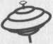

JENNIFER FULTON
UN COIN DE PARADIS
Traduction de l’anglais (Nouvelle-Zélande)
TALIE MICHEL

KTM éditions
Titre original :
Passion Bay
Éditeur original :
Bold Strokes Books, Inc.
© Jennifer Fulton, 2008
Le code de la propriété intellectuelle n’autorisant, aux termes des paragraphes 2 et 3 de l’article L. 122-5, d’une part, que les « (...) copies et reproductions strictement réservées à l’usage privé du copiste et non destinées à une utilisation collective », et d’autre part, sous réserve du nom de l’auteur et de la source, que « (...) les analyses et les courtes citations justifiées par le caractère critique, polémique, pédagogique, scientifique ou d’information », toute représentation ou reproduction intégrale ou partielle, faite sans le consentement de l’auteur ou de ses ayants droit ou de ses ayants cause, est illicite (article L. 122-4). Cette représentation ou reproduction, par quelque procédé que ce soit, constituerait donc une contrefaçon sanctionnée par les articles L. 335-2 et suivants du code de la propriété intellectuelle.
© KTM éditions, 2013
15, rue Claude Tillier – 75012
Paris ISBN 978-2-913066-56-4
Chapitre 1
L’ambiance, à l’arrêt de bus Mid-Winter, était sinistre, comme toujours. Des extraits de conversations, saisis avant que le vent ne les emporte, des visages au teint marbré, des nez qui coulaient. Tel un troupeau d’automates, les banlieusards avançaient péniblement le long du quai de Lambton. Ils serraient contre eux leurs attachés-cases et leurs sacs de courses, symboles de la fin de leur journée de travail, en regardant dépités l’alignement de bancs délabrés.
Évidemment, le trolleybus était en retard. Qu’il arrive à l’heure aurait généré un stress bien inutile. Les passagers qui faisaient la queue n’auraient eu aucun autre sujet de conversation, à part la météo, et cela paraissait insensé de dire à quelqu’un emmitouflé dans son manteau et son écharpe qu’il faisait un temps exécrable.
Wellington, en Nouvelle-Zélande, était une ville ignoble en juillet. Les vents du sud provenant de l’Antarctique rugissaient, les tremblements de terre incessants rendaient la population nerveuse et le taux de suicide doublait.
Cody Stanton détestait tout cela. Elle détestait cette atmosphère de grisaille sans fin, le rhume que tout le monde avait sous une forme ou une autre, les accidents de la circulation et les sirènes qui retentissaient à longueur de journée. Elle détestait tous ces détritus qui volaient dans les rues, l’air lugubre des passants, les écrans de télévisions dans les vitrines qui ne montraient rien d’autre que du rugby.
Quelqu’un la bouscula et elle se rendit compte que la file devant elle s’était évaporée. Elle pressa le pas le long du quai, passant nerveusement la main dans ses cheveux ébouriffés par le vent et se hissa dans le trolleybus rouge et blanc.
— Deux zones, murmura-t-elle sans, pour une fois, remarquer les cuisses musclées de la lesbienne au volant, ni le fait que celle-ci la déshabillait du regard. On aurait dit que la moitié des transports en commun de la ville était conduits par des lesbiennes.
Elle perdit l’équilibre quand le bus démarra. En essayant de saisir une poignée, Cody accrocha sa veste en cuir au Caddy d’une vieille dame et trébucha sur les Rebook d’un jeune plutôt costaud. Elle entendit le distinct « Va te faire foutre » sans réagir et se dirigea vers un siège libre, au fond à côté d’une grosse Indienne. Elle s’installa dans la minuscule place en faisant attention de ne pas abîmer le sari très fin qui dépassait de son imperméable et elle regarda droit devant elle.
Des gens sont licenciés tous les jours, se dit-elle. Seulement, elle avait pensé que cela ne lui arriverait jamais. Elle avait un boulot sympa, un emploi sûr dans l’informatique et ses compétences étaient rares sur le marché néo-zélandais. Elle réalisa que cela ne ferait pas très bien sur son CV. Certains, à son boulot, avaient démissionné pour l’éviter ; des hommes, bien sûr, ceux qui avaient la trouille de se confronter au marché du travail. Elle n’était cependant pas très fière d’avoir attendu et de partir avec un chèque.
Les lois du travail étant ce qu’elles étaient en Nouvelle-Zélande libérale, les indemnités seraient conséquentes. C’est déjà ça, pensa-t-elle, en tâtant l’enveloppe dans sa poche. Sa présence était rassurante. Elle ne l’avait pas encore ouverte. La demi-heure accordée pour rassembler ses affaires avait déjà été assez traumatisante. Prenez vos affaires et quittez le bâtiment. Cody n’en revenait pas. Quelqu’un avait dit, « traités comme des criminels ». Ils n’avaient pas le droit de parler avec les autres, en dépit des regards maladroits et compatissants.
Cody se rappelait avoir ressenti ce même soulagement quand les premiers licenciements avaient été annoncés, quelques mois plus tôt. Elle avait regardé ses collègues partir, certains avec peu d’avenir dans leur spécialité. Beaucoup avaient traversé la mer de Tasman pour l’Australie ; un s’était suicidé. Perdre son travail n’en était pas la principale raison, avait insisté le psychologue de l’entreprise. Il avait des problèmes personnels.
Le trolleybus avançait par à-coups dans les embouteillages, s’arrêtant et redémarrant régulièrement après plusieurs pâtés de maisons. Cody se dit qu’il ferait nuit noire quand elle arriverait chez elle. Le trajet matin et soir à un rythme d’escargot ne lui manquerait pas. Elle s’agrippa au siège quand le bus tangua sur la gauche, se dirigeant vers les tunnels du Mont Victoria. Presque sur les genoux de l’Indienne, elle fit un effort pour se redresser, se leva et joua des coudes pour rejoindre les portes.
Son arrêt était de l’autre côté du tunnel. Les chauffeurs le rataient très souvent. Prise en sandwich entre des hommes en pardessus et des étudiants aux cheveux violets, elle tira sur la corde pour prévenir le chauffeur à l’avance. La journée avait été suffisamment difficile sans en plus avoir à marcher cinq cents mètres supplémentaires sous la pluie.
Évidemment, le chauffeur accéléra dans le tunnel et oublia de ralentir à temps pour s’arrêter en toute sécurité dans la descente de l’autre côté.
— Eh, Merci beaucoup ! s’écria Cody en regardant s’éloigner son arrêt.
Le chauffeur avait dû l’entendre parce qu’elle « loupa » aussi l’arrêt suivant. Finalement, Cody descendit avec tous les autres passagers au centre commercial de Hataitai. Là, l’odeur de poulet frit l’assaillit et elle remonta péniblement la côte vers son appartement, l’estomac dans les chaussettes.
Une fois à la porte, elle ralentit pour un faux et stupide prétexte. La nuit dernière, c’était des taches de peintures sur le trottoir, ce soir ses lacets avaient besoin d’être refaits. Idiote, se réprimanda-t-elle, et marcha à contrecœur jusqu’à sa porte. Elle l’ouvrit le cœur battant, s’attendant presque à sentir les odeurs de cuisine et à entendre un vieux disque rayé de Ferron*. Mais l’étroit couloir était noir et silencieux, l’air vicié par l’odeur des fish and chips de la veille.
Pour la première fois ce jour-là, des larmes coulèrent sur ses joues. Elle les essuya avec impatience. Si Margaret avait été là, elle se serait précipitée dans la cuisine, elle lui aurait tout raconté, lui aurait tendu son enveloppe à ouvrir et se serait blottie contre elle, pour se faire réconforter. Mais au lieu de cela, elle tourna en rond dans sa chambre vide, laissa tomber sa serviette sur le sol et se jeta sur son lit. Elle fixa le plafond un moment, puis posa son regard sur la tache plus claire au mur, là où le poster d’Amelia Earhart de Margaret avait été accroché.
Il allait vraiment falloir mettre quelque chose à la place, pensa Cody au moins pour la vingtième fois en quatre semaines. Au lieu de cela, elle resta figée et grelottante jusqu’à ce que la nuit engloutisse les contours du papier peint et le trou noir de l’espace où avait été installée la commode de Margaret, les tiroirs soigneusement rangés, des napperons disposés sur le dessus.
Consciente de claquer des dents et que ses cheveux trempaient son oreiller, finalement Cody s’assit. Elle devrait se faire à manger, mais il n’y avait rien dans la maison. Elle n’avait fait aucune course depuis que Margaret était partie. De toute façon, elle n’avait pas faim, et surtout plus envie de fritures.
Avec un soupir atone, elle alluma la lampe de chevet, tira l’enveloppe de sa poche et l’ouvrit. Le courrier à l’entête gaufrée l’informait que ses indemnités de licenciement s’élevaient à 10 000 $. Un chèque était agrafé au dos. Cody le détacha et l’étudia, l’esprit embrumé. Le nombre de zéros ne lui semblait pas bon. Elle les compta, se frotta les yeux et les compta encore. Elle lut à haute voix le montant, le doigt sur la ligne.
— Cent mille dollars.
Elle paniqua un instant, puis elle compta les zéros une troisième fois, juste pour être sûre.
— Merde ! Chuchota-t-elle, 100000 $.
Eh bien, parfait. Ces crétins de l’administration s’étaient trompés, elle allait devoir s’y préparer et retourner là-bas dès demain pour régler cette affaire. La bureaucratie avait encore gagné.
Avec un grognement, elle plongea sous la couette tout habillée.
— C’est pas mon jour, murmura-t-elle.
*
Quand le soleil éclaira son visage le lendemain matin, Cody ouvrit les yeux en sursaut et rejeta les draps. Huit heures et demie ! Elle était en retard. Elle se rua en pestant vers la salle de bains, puis elle se souvint. Sur le sol, près de son lit, gisaient la lettre et le chèque qui prouvaient que la journée de la veille n’était pas qu’un mauvais rêve. Cody s’approcha du bout de papier comme s’il était radioactif et le fixa. Même de haut, même à la lumière du jour, les chiffres étaient les mêmes que la nuit dernière : cent mille dollars.
Bien sûr, elle allait devoir le rendre. L’administration avait probablement déjà découvert son erreur et annulé le chèque. Et si elle ne l’avait pas fait ? Et si elle avait simplement estampillé son dossier Traité et rangé aux archives dans la grosse pile des licenciements de la semaine.
Cody récupéra le chèque sur le sol et le dépoussiéra machinalement. Et si elle le gardait ? Et si elle dépensait une grosse partie. Ça leur ferait les pieds à ces salauds, décida-t-elle un peu fébrile. Que pouvaient-ils faire ? Lui demander de rembourser 90 000 $ ? La mettre en prison ?
Pour la première fois depuis un mois, Cody rit.
*
Plus tard ce matin-là, le guichetier de la banque trouva cela moins drôle.
— Gros dépôt, commenta-t-il, regardant Cody comme si elle était sur le banc des accusés.
— Ce sont mes indemnités de licenciement, dit-elle, presque tragiquement. J’ai perdu mon travail.
Son visage s’éclaira immédiatement et prit aussitôt un air compatissant hypocrite.
— Vraiment désolé, murmura-t-il en secouant la tête. Il y en a beaucoup en ce moment.
Cody fit de son mieux pour paraître insouciante pendant qu’il saisissait le montant et tamponnait tout. Elle pouvait presque sentir les caméras de sécurité zoomer sur elle, son visage immortalisé sur les écrans de télévision partout en Nouvelle-Zélande dans un épisode de Crimewatch : Cody Stanton, femme de type caucasien, âgée de 28 ans, 1,70 m mince, cheveux noirs, yeux gris. Recherchée pour vol. Elle frissonna.
— ... beaucoup d’argent. Notre directeur peut vous conseiller... n’hésitez pas à appeler, lui dit le guichetier sur le ton de la confidence.
Cody rangea son relevé de comptes dans son sac.
— Merci. Je le ferai certainement. Vous avez été très serviable.
Elle lui adressa son plus beau sourire et s’éloigna.
— Cent mille, murmura-t-elle dans un souffle en sortant de la banque. Et maintenant ?
Chapitre 2
À onze mille kilomètres de là, Annabel Worth enterrait sa tante Annie. C’était une petite cérémonie privée et elle était l’une des quelques personnes qui jetaient des roses sur le cercueil pendant qu’il descendait. Elle regarda autour d’elle et reconnut un couple de cousins éloignés et plusieurs vieilles dames éplorées, amies de sa tante. Les parents d’Annabel étaient représentés par une somptueuse composition florale en forme de croix. Ils ne pouvaient pas faire mieux pour avoir le dernier mot, pensa-t-elle cyniquement. Sa tante, on ne peut plus païenne, aurait détesté cela.
Quand les prières furent terminées, Annabel approcha lentement du bord de la tombe, ses chaussures noires à hauts talons s’enfonçant dans la pelouse. Les gens s’en allaient peu à peu par deux ou trois, probablement pour retourner à leur hôtel et se préparer pour la petite réunion qui aurait lieu plus tard. Le soleil était presque trop brillant. Annie ne le verrait plus jamais, pensa tristement sa nièce. Elle prit une poignée de terre et la jeta sur le cercueil laqué, elle fixa sa propre image se reflétant sur la surface ivoire.
Elle regrettait de ne pas avoir passé plus de temps avec Annie dernièrement, mais elle avait eu beaucoup de travail et elle avait laissé passer les semaines, sans se rendre compte de la rapidité du déclin de sa tante. Annie avait quitté sa maison dans le Pacifique sud quelques mois plus tôt pour passer le reste de son temps alloué ici-bas dans son appartement de San Francisco. Annabel était venue de Boston quand elle était arrivée, et elle lui avait semblé en bonne santé, peut-être un peu maigre. Très fière, Annie avait caché la gravité de sa maladie aussi longtemps que possible.
Quatre semaines plus tôt, Annabel et sa mère lui avaient rendu visite, et tout le monde pensait qu’elle avait encore plusieurs mois devant elle. Ils avaient été profondément éprouvés quand son docteur les avait appelés la semaine dernière, leur disant qu’elle était dans un état critique. La progression du cancer pouvait s’accélérer brusquement, avait dit une femme de l’hôpital. Annie était morte pendant qu’Annabel était dans l’avion, essayant de rejoindre San Francisco à temps pour lui dire au revoir.
Ravalant ses larmes, elle poussa du pied une motte de terre dans la tombe. Cela fit un bruit doux et caractéristique.
— Mademoiselle Worth ? dit une voix derrière elle, elle se retourna. Un petit jeune homme transpirant lui tendit une carte de visite humide.
— Jessup. Bryan Jessup de Swain, Buddie & Jessup, lui dit-il. Walter Jessup est mon père, ajouta-t-il, comme si cela expliquait tout.
Déconcertée, Annabel recula du bord de la tombe.
— Je comprends que vous êtes avocat.
Quel autre professionnel interromprait un enterrement avant même que le cercueil ne soit recouvert ?
— Effectivement, confirma-t-il fièrement.
Annabel attendit. Il se tenait là debout, la fixant, comme s’il avait devant lui un spécimen rare de zoo.
— Que puis-je faire pour vous, M. Jessup ? lui dit-elle finalement.
— Oui... excusez-moi. Il s’éclaircit la voix. Nous vous avons écrit après le décès de votre tante, paix à son âme. Je suppose que vous n’avez pas reçu notre lettre avant de quitter Boston.
— Vous supposez bien.
— Pardonnez cette intrusion pendant son... Nous avons pensé que nous pourrions vous contacter ici avant que vous ne quittiez la ville, vous comprenez. Pour convenir d’un rendez-vous.
— Un rendez-vous ? Que diable, Swain et Co lui voulait-il ?
— Pour discuter des affaires de votre tante, ajouta Jessup.
Annabel haussa un sourcil. Les affaires de sa tante. Voilà qui ferait une intéressante conversation. Mais pas avec un jeune avocat californien en sueur.
— Vous voulez dire avant que son testament ne soit ouvert ? J’ai bien peur de ne pas comprendre, M. Jessup, dit-elle d’un ton digne très bostonien. L’effet fut immédiat.
— Bien sûr. Il s’épongea le front. Permettez-moi de vous présenter nos sincères condoléances, mademoiselle Worth. Le décès prématuré de votre tante a dû être un grand choc. Il regarda la tombe, visiblement gêné. Vous êtes citée dans son testament, naturellement. Mais pour certaines raisons, il est préférable que nous...
Annabel l’arrêta.
— Est-ce vraiment nécessaire d’avoir cette conversation maintenant ?
Jessup Jr cligna des yeux, apparemment habitué à être reçu plus chaudement par des parents salivant à l’idée d’un gros héritage.
— Votre tante nous a laissé des instructions très spécifiques, nous devions vous contacter immédiatement, dit-il avec une pointe de tristesse. Nous avons une lettre pour vous de sa part, un courrier confidentiel. Mon père a pensé que c’était important de vous en informer dès que possible.
— Je vois.
— Pourrais-je, euh... vous raccompagner à votre voiture ou vous conduire quelque part ?
Annabel hésita.
— La dernière option me convient, dit-elle, jetant un regard sur le chemin sinueux menant à la limousine funéraire dans laquelle elle était arrivée. Retourner à Russian Hill dans cette luxueuse voiture était quelque chose dont elle se passerait bien.
Manifestement content d’avoir marqué un point avec une cliente qu’il voulait impressionner, le jeune avocat la conduisit vers une Porsche gris clair et lui ouvrit la porte avec un grand geste. Il essaya de l’aider à monter, mais Annabel était experte dans l’art de se soustraire aux mains trop attentionnées. Elle se demandait quand elle rencontrerait un homme qui ne se comporterait pas comme un idiot en sa présence, la fixant comme s’il n’avait jamais vu une blonde dans un pays qui avait universalisé le marché du peroxyde.
Les gens l’avaient dévisagée toute sa vie, certains mêmes supposant qu’ils avaient le droit de la toucher comme s’il s’agissait d’une rareté dans les rayonnages d’un magasin. Elle avait grandi sans vraiment s’y habituer et pendant des années, elle avait détesté son apparence, sa peau très blanche, ses yeux d’un bleu rosé particulier et ses cheveux plus blonds que ceux de Barbie. Pendant que les autres filles paradaient dans leur bikini, elle portait une robe pour se protéger du soleil. Avec des manches longues. Les autres filles pouvaient se maquiller. Sur son teint d’albinos, on aurait dit de la peinture.
Cette conscience douloureuse n’avait jamais vraiment disparu, même après avoir « réussi ! » à se marier. Cela avait été une erreur lamentable. Quelle naïve j’étais à cette époque, pensa-t-elle cyniquement.
Après avoir évité les garçons pendant le lycée et à l’université, elle avait finalement rencontré Toby Simpson, un nouvel employé de son père. Toby était intelligent, poli et ambitieux. Annabel voulait tellement se sentir comme tout le monde et faire bonne impression – un peu poussée par sa mère – qu’elle s’était convaincue d’avoir besoin d’un mari et avait accepté la proposition opportune de Toby.
Le mariage n’avait duré que six mois et elle en était sortie avec encore moins de confiance en elle. Cela faisait presque dix ans et elle n’était plus une mauviette. Mais les hommes la dévisageaient toujours et, à son plus grand désarroi, cela l’énervait toujours autant. La dernière chose dont elle avait envie aujourd’hui, encore plus que d’habitude, c’était d’essayer de garder sa jupe moulante en soie noire sur ses genoux pendant que Jessup Jr la conduirait à travers tout San Francisco.
— Je séjourne dans l’appartement de ma tante à Russian Hill, dit-elle avec une pointe d’irritation en s’installant sur le siège noir.
— Pas de problèmes. Je sais où c’est.
Il fit rugir le moteur à son intention, puis sembla se rappeler où ils étaient. Il bafouilla une excuse et traversa lentement le cimetière avec respect.
Annabel regardait machinalement par la fenêtre. De grands arbres et des lacs artificiels formaient une toile de fond sylvestre derrière des pelouses manucurées qui semblaient d’un vert peu naturel et des buissons trop nets pour être vrais. Des fleurs ponctuaient cette vue sereine de touches de couleurs audacieuses. Chaque allée de monuments alignés rendait la mort d’Annie de plus en plus concrète. Ce n’était pas juste, pensa-t-elle l’esprit embrumé. Elle n’avait qu’une soixantaine d’années et c’était quelqu’un de bien. Avec toute la racaille à sa disposition, pourquoi la Faucheuse l’avait-elle prise elle ?
Elle sentit les larmes menacer, elle reporta son attention sur la rue. Colma, connue également comme « La ville des âmes », était une nécropole, pas une métropole. Au lieu de fast-foods et de magasins de mode, la rue principale était bordée de fleuristes, de graveurs de tombe et de boutiques funéraires. Une ville de près d’un million de morts et près de mille cinq cents vivants, où les visiteurs étaient accueillis avec une pancarte les avertissant qu’il était interdit de s’immiscer dans les processions funéraires. C’était l’endroit où San Francisco avait relocalisé ses morts un demi-siècle plus tôt.
Annabel était surprise qu’Annie ait choisi d’être enterrée ici et pas sur les îles qu’elle aimait tant. Elle supposait que la plupart des gens voulaient rentrer chez eux à la fin.
— Est-ce que vous connaissiez ma tante ? demanda-t-elle à Jessup Jr après quelques kilomètres de conduite agressive. Ils étaient maintenant sur l’autoroute et il s’apprêtait à lui montrer comment un homme, un vrai, se comportait au volant d’une voiture de sport.
— J’ai eu le plaisir de lui apporter des documents à plusieurs reprises, dit-il, en faisant une queue de poisson à un homme en Pontiac Firebird. Une femme très haute en couleur, si je puis me permettre. Et très gentille.
— Oui, elle l’était, répondit Annabel doucement. Elle va beaucoup me manquer.
Le gars dans la Pontiac s’arrêta à côté et Jessup fit rugir le moteur. Super, pensa Annabel. Je vais être tuée à mon retour d’un enterrement.
Jessup lui jeta un coup d’œil tel un chiot qui, venant de manger votre escarpin favori, s’attendrait à être félicité de son exploit.
Au diable, décida-t-elle. La vie n’était pas si belle après tout.
— Ouah, cette voiture en a vraiment sous le capot, dit-elle avec un grand sourire.
C’était le seul encouragement dont il avait besoin.
Chapitre 3
À l’heure prévue le lendemain matin, une meute de juristes et d’avocats était rassemblée dans la salle de conférences exagérément luxueuse de Swain, Buddie & Jessup, tous là pour elle. Son nouveau meilleur ami Jessup Jr lui adressa un sourire conspirateur et la présenta à ses collègues.
Buddle était petit et costaud comme un pitbull. Annabel l’imaginait aisément dans un tribunal réduisant aux larmes une adolescente victime de viol. Swain n’était visiblement pas à sa place en tant que juriste – refuser à la fac de médecine de Harvard, décida-t-elle. Un certain Zimmerman, qui ressemblait à Rambo dans un costume, tripotait son stylo-plume comme si c’était un haltère. Il y avait plusieurs autres personnes dont elle oublia immédiatement le nom et pas une seule femme.
Jessup Sr était une publicité vivante pour les implants capillaires.
— Nous sommes ravis que vous ayez pu vous joindre à nous, mademoiselle Worth, commença-t-il d’une voix suave.
— Madame, dit-elle sèchement. N’avaient-ils rien de mieux à faire, tous, ou y avait-il vraiment une raison pour cette conférence au sommet ?
— Madame Worth, se reprit-il rapidement et il inclina respectueusement la tête dans sa direction. Merci d’être venue en cette période difficile.
Tout le monde la dévisagea et Annabel résista à l’envie de tirer un peu plus sa jupe sur ses genoux. Elle croisa les chevilles et fit tourner sa lourde chevalière.
— Il y a plusieurs points que nous devons aborder avec vous en ce qui concerne les actifs de votre tante, entonna Jessup. Étant sa principale bénéficiaire – à part quelques legs à des amis et des œuvres de charité..., dit-il avec un geste dédaigneux de la main comme si cela ne comptait pas. Je suis sûr que vous avez des questions.
Annabel fronça les sourcils. Ils se comportaient comme si elle connaissait déjà les termes du testament de sa tante. Il n’avait pas été encore formellement ouvert. Elle avait supposé qu’Annie lui laisserait quelque chose. Sa mère avait mentionné l’appartement de Russian Hill. Mais elle ne savait absolument pas qu’elle lui laisserait tout.
— Comme vous le savez sans doute, le patrimoine de votre tante est considérable – en fait, c’est le plus important dont s’occupe notre cabinet.
Walter Jessup toussa poliment. Ces associés hochèrent la tête et se léchèrent les lèvres. Zimmerman se pencha un peu plus en avant et bougea frénétiquement les jambes comme s’il courait sur place.
Annabel leva la main.
— Pardonnez-moi, je ne suis pas vraiment au courant des affaires de ma tante. Ce n’est pas un sujet que nous abordions.
Après cela, il y eut des murmures de tous les côtés et tout le monde la dévisagea à nouveau, les yeux brillants, comme des rats bavant sur leur prochain repas.
— Je ne crois pas qu’elle sache, murmura Buddle à Jessup.
— Vous êtes bien mademoiselle... Madame Annabel Worth de Back Bay, à Boston ? se fit confirmer tardivement Jessup.
Annabel acquiesça et remit une mèche de cheveux rebelle dans sa tresse.
— Dans ce cas, nous avons une très bonne nouvelle pour vous, déclara-t-il sur un ton paternaliste inhérent à sa profession.
*
Deux heures plus tard, Annabel enlevait ses vêtements et s’effondrait sur son lit. Elle n’arrivait toujours pas à y croire. Tante Annie lui avait tout laissé ; et tout était, comme Buddle l’avait si succinctement dit, « un énorme et sacré patrimoine à gérer pour un petit bout de femme ».
Non seulement sa tante possédait l’appartement de Russian Hill, mais sa propriété dans les îles Cook ne se cantonnait pas uniquement à la villa dont elle avait si souvent parlé à Annabel, mais à toute l’île sur laquelle elle se trouvait. Annie avait également amassé une petite fortune en actions et en immobilier commercial, cela en était presque embarrassant. Ses airs de bohémienne avaient caché un cerveau remarquablement doué pour les affaires.
Ce n’était pas la première fois qu’Annabel se rendait compte à quel point elle connaissait si peu sa tante. Les détails sur sa vie avaient toujours été vagues. La plus jeune sœur de sa mère, dont on parlait invariablement avec une pointe d’exaspération polie. Annabel avait fini par accepter qu’Annie soit en quelque sorte embarrassante pour sa famille. Qu’elle soit lesbienne était une chose. Mais il semblait qu’Annie avait aussi un passé, un passé qui était supposé demeurer bien enfoui.
Alors qu’elle s’apprêtait à quitter les juristes ce matin-là, Walter Jessup lui avait remis deux enveloppes scellées.
— Votre tante a laissé ceci, expliqua-t-il, avec un air cérémonieux. L’une est pour vous. Il lui tendit une enveloppe couleur lavande. L’autre est pour une certaine Lucy. Il scruta le visage d’Annabel pendant un moment. Est-ce que vous vous souvenez d’une dame de ce nom, une amie de votre tante, ou peut-être une employée ?
— Je ne crois pas.
— Il semblerait que votre tante s’attendait à ce que cette « Lucy » se présente elle-même pour réclamer cette lettre.
Annabel chercha dans sa mémoire.
— Je suis désolée, je ne connais personne de ce nom.
— Dans ce cas, nous devrons faire une investigation. Mlle Adams ne nous a donné aucune autre information. Il remit l’enveloppe dans la poche intérieure de sa veste avec un air résigné et escorta Annabel jusqu’à l’ascenseur. Si nous n’arrivons pas à retrouver cette personne, nous suivrons vos instructions, madame Worth.
Quelle mouche avait piqué sa tante pour s’en remettre à quelqu’un comme Jessup et à son cabinet, cela était un mystère ? Ils semblaient tout droit sortis des années cinquante et ne comptaient pas une seule femme parmi les associés. L’idée de tout laisser entre leurs mains était angoissante, mais les instructions d’Annie étaient très claires. Ils devaient être maintenus dans leur fonction, point.
Perplexe, Annabel mit une paire d’oreillers derrière elle et ouvrit la lettre que Jessup lui avait donnée. Elle la lut une fois rapidement et puis de nouveau très lentement. Elle datait de trois mois plus tôt, très peu de temps après l’arrivée d’Annie à San Francisco.
« Ma chère Annabel,
Au moment où tu liras ceci, j’aurais très certainement rejoint mon créateur et tu vas te demander pourquoi tu es ma seule héritière. À l’heure où je t’écris, mon corps est épuisé par cette saleté de chimiothérapie et je sais qu’il ne me reste que peu de temps.
Pendant toutes ces années, j’ai voulu aborder avec toi certains sujets très importants, mais il semblerait maintenant que je n ’en ai plus la force.
Les réponses se trouvent à Moon Island.
S’il te plaît, va là-bas aussi rapidement que tu peux et tu comprendras.
Je te souhaite une vie heureuse, ma chère fille. Sache que je t’ai toujours aimée.
Annie. »
Chapitre 4
— Moon Island, répéta Cody.
L’agent de voyage indiqua d’un long ongle rouge un point sur sa carte.
— Splendide, souffla-t-elle. Totalement privée. Seulement cinq maisons sur toute l’île, et elles ne sont louées qu’à des femmes. Elle s’arrêta, incertaine, puis murmura : une excentricité de la propriétaire, d’après ce que je sais. Quelque chose qui a à voir avec les coutumes locales...
Elle s’interrompit, sans doute en voyant les yeux de Cody s’écarquiller.
— Qu’à des femmes. Étonnant.
Cody étouffa un toussotement. Le parfum écœurant de la voyagiste lui donnait des aigreurs.
— Ne vous arrêtez pas à ça, lui répondit-elle en s’efforçant de paraître enthousiaste. C’est l’endroit parfait pour s’évader, une sorte de retraite. La plupart de mes clientes adorent. Par exemple, la semaine dernière, une femme s’est arrêtée pour me dire qu’elle avait trouvé ça fabuleux et que les hommes ne lui ont pas manqué une seconde !
— Dingue, dit Cody, à court d’arguments. En fait, ça a l’air parfait – exactement ce que je recherche.
— Vous ne le regretterez pas. Les ongles rouges flottaient au-dessus d’un formulaire de réservation. Cher, mais dans ce domaine, je dis toujours, vous en avez pour votre argent. Alors, combien de jours souhaitez-vous ?
— Un mois, dit Cody, en sortant de son portefeuille une liasse de billets. Et je paye en liquide.
— En liquide ? L’agent de voyage se figea, un peu perplexe. En liquide ?
Elle grimaça comme si elle n’avait jamais vu autant d’argent.
Cody poussa la liasse dans sa direction et la regarda les compter.
Un peu plus tôt à la banque, ils avaient aussi été abasourdis.
— Vous voulez clôturer votre compte et tout retirer ?
Le guichetier avait disparu pour aller chercher sa responsable, une femme au visage sombre qui portait une jupe à fanfreluches et un foulard au logo de la banque. Elle escorta Cody dans un bureau privé où elle lui expliqua qu’il faudrait un peu de temps pour préparer une pareille somme. Est-ce qu’elle était sûre de vouloir tout d’un coup ?
— Je quitte le pays, lui avait dit Cody.
La femme lui avait fait un sourire glacial.
— On pourrait vous préparer des chèques de voyage, madame Stanton, avait-elle proposé. Dans une devise forte, ce serait plus sûr.
— Merci, mais je préférerais avoir des espèces. (Les chèques de voyage étaient trop facilement traçables.) Si vous pouviez m’en donner une partie en dollars américains, ce serait parfait.
La responsable l’avait regardée avec un air de dire, à la limite de la pitié, « Pauvre fille. Elle ne se rend apparemment pas compte, et en plus quitter le pays, que Dieu la garde. » On lui avait demandé de revenir une heure plus tard pour récupérer un attaché-case avec une combinaison et en option une chaîne de poignet. Avec une tête de martyr, la femme l’avait raccompagnée.
Peu après, l’attaché-case à la main, Cody était entrée dans l’agence de voyages la plus proche, sans la moindre idée du lieu où elle allait aller. Un endroit très privé, avait-elle dit à l’agent de voyage parfumée, un endroit obscur, inaccessible et magnifique.
— Dans le genre de la Nouvelle-Zélande ? avait plaisanté l’agent, et pendant un moment, Cody avait envisagé cette possibilité. Elle pourrait prendre un ferry pour l’île du Sud et disparaître dans les grands espaces de la côte ouest, se terrer dans l’une des villes de mines d’or avec tous les autres criminels qui étaient passés entre les mailles du filet de la police. Elle pourrait changer son nom et devenir guide sur les bateaux qui allaient montrer les baleines à Kaikoura.
Non, avait-elle décidé, la Nouvelle-Zélande était trop petite. Tôt ou tard, elle pourrait téléphoner à la maison dans un moment de faiblesse, ou pire, tomber sur quelqu’un qu’elle connaissait et... rideaux ! Ils la trouveraient. Le plus tôt elle partirait, le mieux ce serait. Et avec un aller simple, pour que personne ne connaisse sa destination finale. Elle avait déjà donné son préavis pour son appartement. Tout ce qu’elle avait à faire était de dire au revoir à sa mère, elle pourrait squatter chez Janet jusqu’à son départ.
*
— Tu vas où et tu veux que je fasse quoi ?
Janet, sa meilleure amie, la dévisageait comme si elle avait perdu la tête.
— Je quitte la Nouvelle-Zélande, lui dit Cody. Je vais sur une île près de Rarotonga. Après ça, j’irai probablement à Londres et je chercherai un travail.
— Je n’en reviens pas que tu aies rendu ton appartement. Et si tu changes d’avis et que tu veux revenir ?
— Tu as un canapé décent, répondit Cody avec un sourire effronté. Elle se rendait compte que Janet s’inquiétait de son état d’esprit. Ne te fais pas de soucis, ajouta-t-elle d’une voix rassurante. Je vais bien. Je te promets de t’appeler quand je pourrai.
Janet la regarda dubitative.
— Tu ne me dis pas tout.
Cody essaya le regard innocent, mais Janet ne la connaissait que trop bien.
— Bon, il y a quelque chose, concéda-t-elle. Mais je ne peux pas t’en parler maintenant. Quand je pourrai, tu seras la première à le savoir. D’accord ?
— Tu as rencontré quelqu’un ? Tu dois la retrouver sur cette île ou quelque chose comme ça ?
— Non ! Fais-moi confiance, je ne vais sortir avec personne pendant un bon moment, dit Cody énergiquement. Elle poussa l’attaché-case sur le sol. Est-ce que tu peux me faire une faveur et garder ça pendant mon absence ? Et s’il te plaît, ne dis pas où je vais. À personne. C’est important.
Janet repoussa une mèche châtain de ses yeux et examina l’attaché-case avec une expression dubitative.
— On dirait Fort Knox. Qu’est-ce qu’il y a là-dedans ?
— Des affaires personnelles, lui dit Cody benoîtement. Des papiers importants, testament et autres. Cela, au moins, c’était vrai, songea-t-elle avec une pointe de culpabilité. Il y avait aussi quatre-vingt mille dollars à l’intérieur, mais elle se dit que ce que Janet ne savait pas ne pourrait pas lui nuire.
Son amie la serra dans ses bras.
— Je sais que tu es triste en ce moment, d’avoir rompu avec Margaret, d’avoir perdu ton boulot et tout ça. Mais tu ne vas pas faire de bêtises, hein ?
Cody lui rendit son étreinte et soupira profondément. Elle avait envie de tout dire – ce qui s’était vraiment passé avec Margaret, son boulot, l’argent, son plan d’évasion – et pourquoi elle avait très peur maintenant, alors qu’elle partait demain.
Mais elle se ravisa et dit la gorge serrée :
— Tu vas me manquer comme jamais.
C’était vrai. Janet était le genre de personne que tout le monde espérait avoir comme amie. Elle était loyale, drôle et toujours présente. Les amours pouvaient aller et venir, mais Janet faisait toujours le meilleur guacamole de toute la ville.
Si seulement Cody l’avait écoutée, il y a quelques années, quand elle avait émis des réserves au sujet de Margaret. En fait, Janet avait émis plus que des réserves. Dès la première rencontre, elle avait détesté la nouvelle compagne de Cody et ne s’en était pas cachée. Cody avait pris la mouche et claqué la porte, vexée. Pendant environ un an, elles avaient gardé leurs distances, jusqu’au jour où Margaret avait laissé échapper un commentaire négatif à propos de Janet qui l’avait fait réfléchir. Cody s’était soudain rendu compte que Margaret avait subtilement manœuvré pour s’assurer qu’elle ne se rabiboche pas avec Janet. Même maintenant, elle ne pouvait pas dire avec certitude comment son ex avait fait, mais c’était son fonds de commerce. Les personnes que Margaret avait manipulées étaient toujours convaincues qu’elle avait voulu bien faire.
— Tu vas me manquer aussi, dit Janet. Tu vas revenir, hein ?
Elle dévisagea Cody de son regard de chien battu, cherchant à découvrir ce qu’elle n’avait pas dit.
— Bien sûr que je vais revenir, promit Cody, et elle espérait que ce soit vrai.
*
Nathaniel Kleist fronça les sourcils en direction de la grande femme blonde assise en face de lui.
— Tu vas faire quoi ?
— Tout est écrit là, Nat.
Annabel faisait référence à la feuille de papier sur son sous-main.
— Je sais lire, grogna-t-il, poussant la lettre sur le côté comme un cafard écrasé. Mais je te demande ce que tu es vraiment en train de faire. Enfin, pour l’amour du ciel, Annabel, tu es mon meilleur trader. Si c’est plus d’argent que tu veux, Seigneur Jésus, demande ! Si tu n’aimes pas ta nouvelle secrétaire, dis-le et je t’en trouverai une autre.
Il s’était levé et faisait les cent pas comme un lion en cage. Une Drama queen – ils avaient inventé ce terme pour Nat.
— Nat, lui dit Annabel d’un ton qui n’autorisait aucune réplique. Mon contrat se termine et je ne reviendrai pas. Pour raisons personnelles. C’est tout. Point final.
— Raisons personnelles. Il se frappa le front et s’adossa lourdement contre son paravent italien peint à la main. C’est New York, c’est ça ? Qu’est-ce qu’ils te proposent ? lui dit-il en la fixant d’un regard accusateur.
Annabel se leva et se dirigea vers la porte.
— Ça suffit !
— Je t’offrirai plus. Il lui courut après. Je te propose le double... Annabel, ne me fais pas ça.
— Bon Dieu, Nat ! Annabel éleva la voix. Je pars. J’abandonne le trading. Il n’y a pas de New York, pas de chasseur de têtes. J’ai démissionné. Point.
— C’est un homme. Il s’adossa à la porte de son bureau pour l’empêcher de sortir et lui sourit avec indulgence. Pourquoi tu ne me l’as pas dit ? Tu préfères rester à la maison et garder ses pantoufles au chaud. Eh, c’est pas un problème... on peut t’installer un écran dans la chambre si tu veux... demandes. Travaille de la maison.
Annabel soupira. C’est très généreux. Mais il n’y a aucun homme. C’est quelque chose de beaucoup plus intéressant.
— Vraiment ?
Nat fronça les sourcils, visiblement perplexe.
— Si tu veux tout savoir, j’ai hérité d’une île dans le Pacifique, lui dit-elle à contrecœur. Et j’ai décidé d’aller y vivre pendant quelque temps.
— Une île. Comme dans Robinson Crusoé ? Nat lui ouvrit la porte, incrédule.
— Il y a tout le confort, dit Annabel sèchement.
Il secoua la tête, confus. Tandis qu’elle passait devant lui, elle l’entendit murmurer :
— Elle a craqué. Elle fait un burn-out, pauvre gamine.
Chapitre 5
La chaleur frappa Cody comme une boule de feu et elle commença instinctivement à s’éventer avec le livre qu’elle avait survolé pendant les cinq heures d’avion.
Elle traversa le tarmac au milieu d’un groupe de touristes bien nourris en shorts roses et hauts chamarrés, attirant les regards avec son jean et sa chemise à manches longues à carreaux. Il gelait quand elle avait quitté la Nouvelle-Zélande.
On est sous les tropiques, se rappela-t-elle trop tard, là où les fonctionnaires sont débraillés, et où les jeunes mariés voyagent au tarif de groupe. Elle s’arrêta à la douane pendant que des autochtones au visage potelé passaient des colliers de fleurs à l’odeur sucrée autour du cou de chaque passager. Un Allemand coiffé en brosse ordonna à sa femme de le prendre en photo enlaçant une îlienne voluptueuse. Il avait même du mal à détacher son regard de ses seins pour dire le traditionnel cheese. Cody eut un mouvement de recul à ce spectacle.
Passer les douanes et l’immigration fut un jeu d’enfant. Nom, destination, tampon, passez une bonne journée, suivant ! Ils ne s’embarrassaient pas avec les visas dans les îles Cook. Vous pouvez rester trente et un jours, plus longtemps si vous pouvez payer.
De nombreux chauffeurs et rabatteurs agitaient les pancartes des hôtels, agglutinés à la sortie principale, et Cody essaya de se souvenir des instructions de l’agence de voyages. Les touristes se dispersaient vers le parking où attendaient toute sorte de véhicules, dont un nombre impressionnant de Subaru. Les retardataires comme Cody, bataillaient avec leurs bagages, regardaient leur montre et feuilletaient leur itinéraire. Cody était censée trouver un homme avec une pancarte « MOON ISLAND ».
— Ne vous inquiétez pas s’il est en retard, avait dit l’agent. Le temps ne signifie pas grand-chose où vous allez.
La chaleur miroitait sur la route et Cody transpirait. Elle ne souhaitait qu’une chose, enlever ses vêtements et s’étendre sous un arbre quelque part. Chez elle, à Wellington, une chaude journée c’était quand on enlevait son sweat-shirt, et encore, même dans ce cas-là, il fallait le laisser dans la voiture au cas où. Étant connue comme la ville la plus ventée au monde, Wellington était aussi réputée pour ses rapides changements de temps. Une minute, chaud et doux, et la suivante une tempête de grêle. Sa population, influencée par les politiques, essayait de ne pas se réjouir de l’effet de serre. Mais quelques optimistes plantaient déjà des bananiers.
Cody se demanda quand elle y retournerait. Cela faisait bizarre d’avoir pris un aller simple. Comment saurait-elle quand elle pourrait y revenir en toute sécurité ? Elle serait probablement arrêtée par la douane à la seconde où elle descendrait de l’avion. Elle s’émerveillait d’ailleurs de ne pas encore avoir été retrouvée. Après tout, Rarotonga était un territoire néo-zélandais...
Elle étira ses membres raidis par le voyage, remonta ses manches et défit quelques boutons. Elle avait mal à la tête et ses cheveux lui collaient au front. De ses mains fatiguées, elle balaya les mèches courtes et humides.
— Madame Stanton ? la héla un homme.
Cody fit volte-face. La première chose qu’elle vit était une pancarte rustique peinte à la main « MOON ISLAND », la seconde était une grande femme quelques pas derrière. Elle avait les cheveux raides d’un blond presque blanc attachés avec un ruban rose fluo et la peau si pâle, que Cody en resta bouche bée. Une albinos. Elle devait être albinos. Ne la fixe pas, se réprimanda-t-elle comme une maman gronderait son enfant qui pointerait du doigt un infirme.
— Mon nom est Mitchell. La voix se rapprocha. Un accent très british. Bevan Mitchell. Je suis votre pilote.
Cody reporta son regard sur la pancarte et sur l’homme qui la tenait sous le bras. Il portait un treillis en coton léger et un chapeau de paille défraîchi. Une cigarette était accrochée à sa lèvre inférieure et une paire de lunettes de soleil d’aviateur était suspendue à la poche de chemise.
— Mon pilote ? répéta Cody, cherchant inconsciemment un uniforme.
— Ce sont vos bagages ? Il les prit avant même qu’elle ne réponde. Suivez-moi.
Cody regarda par-dessus son épaule. La femme était partie, elle ressentit une vague pointe de déception. Peut-être qu’elle n’avait jamais vraiment été là, que c’était juste un fantôme ou une apparition sortie tout droit de son imagination due au stress et à la chaleur.
Assaillie par le doute, elle suivit le pilote. Il n’était pas trop tard. Elle pouvait toujours dire qu’elle avait changé d’avis, payer les frais d’annulation et prendre le prochain vol pour Wellington. Pendant qu’ils longeaient le terminal, elle vit un officier de police se diriger vers l’entrée et baissa la tête.
— Nous allons par là, dit le pilote, en lui montrant vaguement un groupe de hangars.
Cody le suivit sur le tarmac, l’humidité s’accumulait dans le bas de son dos. Ses vêtements semblaient trempés, lui collaient à la peau. L’odeur âcre du kérosène se mêlait à celle du goudron chaud et des fruits mûrs dans une atmosphère indolente. Médusée, elle s’arrêta près d’une caisse d’ananas à quelques mètres de leur moyen de transport.
L’avion était un bimoteur à quatre places. D’après-guerre, mais tout juste. Cody frissonna à la vue de la structure délicate des ailes et de leur fin revêtement métallique. Elles étaient probablement au bord de la rupture. Elle regarda d’un air maussade le pilote charger la caisse de fruits et ses bagages, faisant tressaillir l’avion.
— Montez, fillette, lui lança-t-il en vérifiant les hélices.
— Le crime ne paie pas, marmonna-t-elle, et elle se hissa dans la plus petite cabine qu’elle n’ait jamais vue.
L’intérieur était une carcasse branlante remplie de colis et de caisses. Elle occupait l’un des deux minuscules sièges à l’arrière et se demanda où mettre les jambes. Une caisse de bananes occupait l’espace entre son siège et celui du pilote. Avec précaution, elle coinça ses pieds d’un côté et se contorsionna pour s’installer sur le siège dur comme de la pierre.
— Faites attention à votre tête, entendit-elle quelques minutes plus tard, et un second passager apparut.
Ébahie, Cody changea de position pour faire plus de place. C’était elle. Le fantôme. Ne la fixe pas. Elle détourna prestement le regard.
Le pilote vérifia la porte et s’installa dans son siège avant de leur lancer :
— Attachez vos ceintures, mesdames.
Cody chercha à tâtons les vieilles sangles. Cela lui semblait une précaution inutile vu les circonstances. Ils allaient certainement mourir de toute façon, enfin, si jamais ils arrivaient à décoller.
— Laissez-moi vous aider.
Une paire de mains interrompit son tâtonnement, boucla sa ceinture et ajusta la longueur des sangles confortablement sur ses cuisses. Cody rougit à l’étrange intimité de ce geste. Il était totalement innocent, bien sûr, un coup de main de la part d’une passagère plus expérimentée. Néanmoins, tout son corps se raidit.
— Merci, lâcha-t-elle dans un rire nerveux.
— Est-ce que vous avez souvent pris des petits avions ? lui demanda le fantôme sur un ton léger. La voix était légèrement rauque, basse, avec un accent qui paraissait américain teinté d’une pointe britannique.
Elle devait chanter divinement, décida Cody, essayant de ne pas être fascinée par son apparence étrange.
— En fait, c’est la première fois, admit-elle.
— Vraiment ?
L’étrangère enleva ses lunettes de soleil et cligna des yeux sous les reflets brillants derrière l’avion. La lumière fit rétrécir ses pupilles, révélant des iris d’une nuance lavande pâle qui semblait presque irréelle.
— ... Eh bien, il faut une première fois à tout, ajouta-t-elle sur un ton léger. Et si j’ai bonne mémoire, cela sera sûrement moins excitant que ça en a l’air.
Cody sentit son pouls s’accélérer. C’était un sous-entendu. Non, certainement pas. Elle était troublée. Il faisait chaud, le cockpit était exigu et l’atmosphère étouffante, collante. Elle avait récemment rompu. Elle était sexuellement frustrée. Elle leva les yeux et rencontra le regard de cette femme, frappée à nouveau par l’extraordinaire couleur lavande de ses yeux, une subtile pointe de rose sous les iris. Perceptible seulement par moments.
Ses sourcils et ses cils étaient noirs, très probablement grâce à une esthéticienne, se dit-elle. Un tel contraste avec sa blondeur faisait ressortir ses yeux surprenants. Et quel était ce parfum ? Cela ne ressemblait à aucune odeur que Cody connaissait, capiteuse et délicieuse, une pointe de vanille et quelque chose d’autre, probablement l’une de ces fleurs tropicales entêtantes. Elles étaient assises si proches l’une de l’autre que c’était presque impossible de ne pas la respirer. Distraite, Cody se tortilla sur son siège.
— Nerveuse ?
La question avait été posée très doucement.
— Je crois que oui. À nouveau, leurs regards se croisèrent mais Cody baissa les yeux très vite, stupéfaite par ce regard qui ressemblait à du rentre-dedans.
Les moteurs rugirent, ou plus exactement, toussèrent, et leur pilote se tourna vers elles avec un sourire radieux.
— Et c’est parti ! Accrochez-vous à vos chapeaux, les filles.
Le vacarme était assourdissant, les émanations nauséabondes. Respire, se dit Cody alors qu’ils rebondissaient et tanguaient sur la piste. Ses dents s’entrechoquèrent et elle eut un haut-le-cœur. C’est de la folie, pensa-t-elle tandis qu’ils prenaient de la vitesse. Elle aurait voulu simplement rendre l’argent et rentrer chez elle. Quelle mouche l’avait piquée pour troquer sa petite vie tranquille contre une existence de criminel ? Elle aurait pu trouver facilement un autre travail, et en se donnant le temps, surmonter sa rupture avec Margaret. Ce n’était pas comme si elle l’aimait encore. Comment pouvait-on encore aimer une femme qui vous avait si mal traitée ?
Cody entendait encore sa mère : « Un jour tu vas regretter ton impulsivité, ma fille, et j’espère que je serai là pour le voir. »
Regarde-moi maintenant, avait-elle envie de crier. Au contraire, elle jeta un coup d’œil à travers la petite fenêtre trouble et haleta :
— On est en l’air !
Les autres occupants avaient l’air de bien s’amuser.
— Dieu fait une semaine spéciale miracle, dit Bevan Mitchell par-dessus son épaule et soudain, le petit De Havilland, dans son élément au milieu du ciel immense, se détendit. Ses vibrations s’atténuèrent et le bruit sourd des hélices devint rassurant tandis qu’ils s’éloignaient de Rarotonga.
Après suffisamment de temps pour que Cody se remette du « pas si excitant » décollage, sa compagne de voyage reprit la conversation.
— Vous êtes déjà venu dans les îles Cook ? demanda-t-elle.
Cody secoua la tête.
— Et vous ?
Le fantôme remit ses lunettes de soleil une fois de plus et Cody eut honte de se sentir soulagée. Ces yeux couleur lavande étaient beaucoup trop déstabilisants.
— Je suis arrivée la semaine dernière. C’est la première fois. Au fait, je m’appelle Annabel. Annabel Worth.
— Cody Stanton.
— Cody ? Annabel répéta son nom et Cody l’imagina, le murmurant, le criant alors qu’elles...
Choquée, elle chassa cette image. Elle pouvait entendre sa mère lui lancer : « Tu devrais avoir honte. Et tes draps sont encore tièdes... de Margaret. »
— Cody, diminutif de Cordelia, précisa-t-elle, puis elle s’éclaircit la gorge et se força à détourner les yeux de la bouche de la jeune femme.
— Ça te va bien Cody, enfin, le diminutif. Tant de prénoms paraissent mal portés.
— Je pense que vous ressemblez à une Annabel.
— C’est marrant, j’avais l’impression que ça ne m’allait pas quand j’étais petite. Mais je suppose qu’on s’habitue à tout en grandissant.
— Je ne me suis jamais habituée à Cordelia.
Annabel rit.
— C’est bien ce que je pensais.
Qu’avait-elle voulu dire exactement ? se demanda Cody. Est-ce qu’Annabel lui faisait comprendre qu’elle avait été démasquée ? Ou alors elle faisait juste la conversation pour passer le temps ? Moon Island est loin ?
— À peu près une heure et demie. Si tu veux dormir, je te réveillerai quand on se rapprochera.
— Peut-être oui, fît Cody, sachant que c’était fort peu probable avec ce corps chaud de femme, collé contre elle. Mais tout de même, elle ne voulait pas que sa compagne de voyage se sente obligée de faire la conversation ce qui certainement l’ennuyait prodigieusement. Elle ferma les yeux, se tourna légèrement sur le côté et fit semblant de s’endormir.
À sa grande surprise, elle dormait vraiment quand elle sentit une main lui toucher le bras quelque temps plus tard.
— Regarde, lui indiqua Annabel, au-delà du pilote, voilà Moon Island.
Au milieu du vaste espace bleu, Cody repéra une tache vert sombre entourée de crème. L’océan autour paraissait pâle, bleu turquoise. L’agent de voyage n’avait pas menti, Moon Island était vraiment au milieu de nulle part. Son estomac se souleva à nouveau quand le petit appareil entama brusquement sa descente.
— Désolé, dit Bevan joyeusement. Je testais juste ses réflexes.
— Je crois qu’on survivra sans ces acrobaties aériennes, lui dit Annabel avec une familiarité qui étonna quelque peu Cody.
Ces deux-là n’étaient visiblement pas totalement étrangers, conclut-elle avec un petit pincement à l’estomac. Etaient-ils amants ? Elle regarda Annabel à la dérobée et faillit protester à haute voix, rien qu’à l’idée. Irrationnelle, bien sûr. Avec qui cette femme couchait ne la regardait pas. C’était typique. La première femme qui l’intéressait depuis la tragédie Margaret était évidemment hétéro. Très pratique. C’était tellement plus sûr de courir après l’inaccessible.
Elle ravala un soupir, et regarda hardiment par la fenêtre alors que l’avion virait sur sa droite. La mer était proche, d’un bleu digne de Van Gogh, et probablement infestée de requins. L’île, devant eux, apparaissait comme un mirage, sortant légèrement de l’eau comme un aperçu de paradis. Pendant qu’ils se rapprochaient, Cody vit l’éclat des récifs coralliens, sous la surface, une plage blanche entourant un ensemble de palmiers. C’était magnifique, à couper le souffle. Soudain, un optimisme irréfléchi chassa les pensées négatives de son esprit. Si un tel endroit pouvait exister sur la même terre que la froide et venteuse Wellington, alors tout était possible.
La voix de Bevan s’insinua dans ses pensées.
— On arrive maintenant.
Ils piquèrent du nez subitement, et les frissons et le bruit assourdissant recommencèrent.
— Ne t’inquiète pas, lui dit Annabel. Je fais ça presque tous les jours et je suis toujours vivante.
Cody essaya de sourire mais ses mâchoires étaient serrées. En se concentrant pour ne pas tomber dans les pommes, elle joignit les mains et se refusa à voir défiler sa vie devant ses yeux. Si elle était sur le point de mourir, elle voulait au moins pouvoir penser à quelque chose de joyeux.
— On est presque arrivés, dit la voix douce près d’elle. C’est Passion Bay juste en dessous.
Cody sentit un souffle chaud sur sa joue, respira cette impossible fragrance. Elle risqua un coup d’œil devant le pilote. Des palmiers. Tout ce qu’elle pouvait voir c’était des palmiers. L’avion sembla décrocher, tomber du ciel comme un oiseau abattu en plein vol.
— Oh, Seigneur, murmura-t-elle, s’en remettant maintenant à Dieu au moment le plus crucial. Il y eut un bruit sourd très prononcé, et elle agrippa le siège ; ils tanguèrent et furent secoués dans tous les sens pour enfin s’arrêter miraculeusement.
Dès que Bevan Mitchell donna son autorisation, Annabel se précipita pour ouvrir le hayon et sauta souplement sur le sol. Mais les jambes de Cody tremblaient tellement qu’elle n’était même pas sûre de pouvoir bouger. Prétendant fourrager dans son sac, elle prit plusieurs grandes respirations et attendit de pouvoir se reprendre. Après une longue pause embarrassante, elle parvint finalement à débarquer.
— Alors, comment c’était pour toi... Annabel se tourna, les mains sur les hanches, et lui fit un large sourire. Comment c’était ?
S’adossant contre une aile, Cody réussit à ne pas rougir. Encore un sous-entendu. Est-ce que c’était un sous-entendu lesbien ou un vœu pieux de sa part ? Peut-être qu’Annabel et le pilote n’étaient pas amants après tout. Peut-être qu’ils étaient juste amis. Mais Annabel pouvait toujours être hétéro. Elle était peut-être mariée. Mariée et s’ennuyait.
Cody la détailla. Elle portait un t-shirt rose pâle à manches longues et un bermuda blanc. Son corps était athlétique, les muscles clairement définis. Elle fait sûrement de l’aérobic, pensa-t-elle. Son visage ne portait pas l’expression légèrement stressée des joggers.
Elle attendait la réponse et Cody s’interrogea sur ce que ces yeux pouvaient bien demander, cachés derrière ces lunettes.
— Pour moi ? Cody passa la langue sur ses lèvres délibérément et de façon très décontractée, ouvrit quelques boutons de plus de son t-shirt. Je crois qu’on peut dire que la terre a tremblé.
Elle sourit, imagina l’étrangère nue, excitée ; elle s’imagina se glisser contre elle, caresser ses cheveux. Cette fois elle s’autorisa à fantasmer.
Chapitre 6
« Lundi.
Je suis fatiguée. Incroyablement fatiguée. Cela me crève le cœur de dire au revoir à mon île magnifique. J’ai planté un autre hibiscus à côté du manguier de Rebecca ce matin et j’ai fait mes adieux. Mon corps souffre. Je ne supporterai pas une autre aiguille. Ils m’ont dit que j’étais folle de refuser un autre traitement mais je jurerai que c’est pire que la maladie. Malgré tout, je ne peux pas refuser les antidouleurs. Depuis que cela a atteint mes os, je ne peux tout simplement pas imaginer comment quelqu’un peut se passer de médicaments. La nuit dernière, j’ai rêvé de Rebecca, rêvé quelle me serrait dans ses bras à nouveau. Je suis presque prête à partir et pourtant je n’ai toujours pas écrit à Annabel... »
Se sentant un peu coupable, Annabel referma le journal intime de sa tante. La réponse est sur l’île, avait-elle dit dans sa lettre. Elle n’avait sûrement pas besoin de s’immiscer dans la vie privée de sa tante, fouiller les détails les plus intimes de l’existence d’une autre femme pour le découvrir. Est-ce ce qu’avait voulu Tante Annie ?
Pendant un moment, Annabel imagina quelqu’un d’autre à sa place, un cousin qui avait à peine connu Annie. Que ferait-il de ses journaux intimes ? Une trentaine d’années étaient entassées dans des boîtes dans le bureau mansarde de sa tante. Et les lettres ! Liasse après liasse, attachées avec un ruban fin et empilées sur le siège près de la fenêtre.
La maison elle-même était magnifique, une grande maison en bois construite autour d’un jardin central et entourée de larges vérandas. Son nom était Villa Luna et Annabel l’avait aimée dès le premier regard. Elle était construite sur le point culminant au nord-ouest de l’île et donnait sur la jungle, les palmiers et sur la large étendue bleue du Pacifique. Située au-dessus d’une bande de manguiers majestueux, elle était protégée des vents océaniques et de la curiosité des rares passants qui pouvaient se promener sur la plage en contrebas.
Explorant la propriété, Annabel avait été fascinée et agréablement surprise de la rapidité avec laquelle elle s’était sentie chez elle, à quel point cet endroit lui paraissait étrangement familier. C’était comme si elle était d’ici, comme si bizarrement, l’île l’attendait.
Derrière la villa, se trouvaient une clairière tapissée d’herbes, une écurie et une jument noire. Tante Annie adorait les chevaux et Kahlo, la jument, était arrivée par ferry l’année dernière seulement après que son prédécesseur fut mort de vieillesse. Je suis trop faible pour la monter maintenant, avait écrit Annie dans son journal, mais je peux la regarder courir et lui tenir compagnie. D’après Mme Marsters, qui faisait le ménage sur l’île plusieurs fois par semaine, la jument était souvent attachée à la véranda où Annie lisait ou écrivait, lui parlant régulièrement comme à une amie.
Pendant sa première semaine sur l’île, Annabel avait progressivement apprivoisé l’élégante créature, et aujourd’hui, pour la première fois, elle l’avait sellée. Kahlo avait rué un peu au début, puis avait accepté docilement quand Annabel était montée en selle et l’avait gentiment guidée sur la piste à travers la jungle. Très vite, elle se comporta comme si elle n’avait jamais connu aucune autre cavalière. La queue en l’air, les oreilles dressées, elle allongea le pas et répondit aux commandes d’Annabel comme s’il s’agissait d’une épreuve de jumping.
Elles négocièrent un chemin à travers les manguiers jusqu’à Passion Bay et trottèrent le long de la plage. Hennissant à la vue de l’eau, Kahlo tira sur les rennes, apparemment ravie du changement de décor. Attentive à ne pas trop la fatiguer après sa longue période sédentaire, Annabel ne l’autorisa pas à galoper. Plus tard dans l’après-midi, elle l’attacha devant la véranda et fut récompensée quand la jument s’approcha et de contentement blottit sa tête contre sa cuisse pendant qu’elle lisait.
Le journal avait été écrit trente ans plus tôt.
« Père est encore après moi pour que je me marie avec Roger et même Laura me poursuit. Je ne sais pas quoi faire. J’avais dit à Rebecca que je devais la voir, je l’ai suppliée de partir avec moi cet été. Elle dit que je ne peux pas reculer plus longtemps et que je dois parler avec ce pauvre Roger, mais il refuse d’écouter. Que puis-je faire ? »
Trois semaines plus tard, un autre passage :
« Oh quel bonheur ! Rebecca vient avec moi en Europe. La nuit dernière, on est restées assises des heures dans sa voiture à parler et Rebecca m’a donné cette petite bague avec un fer à cheval en diamant incrusté comme porte-bonheur. J’ai du mal à me concentrer tellement je pense à elle, je l’imagine sur une île grecgue, ne portant pour tout vêtement que des fleurs. »
Annabel ferma les yeux et flatta Kahlo machinalement. Elle savait qu’Annie était lesbienne, la plus jeune sœur scandaleuse de sa mère, le squelette dans le placard de la famille. Mais qui était Rebecca ? Sa tante n’en avait jamais parlé. Pourtant, il semblait évident qu’elles avaient été amoureuses, peut-être même amantes, dans les années soixante.
Elle prit une gorgée de son thé glacé et rêvassa un moment sur ses propres fantasmes, centrés principalement sur la jeune femme rencontrée hier dans l’avion. Cody. Diminutif de Cordelia. Annabel se rappela son accent traînant. Accent australien apparemment, peut-être plus doux.
« J’adore nager », avait-elle dit, en regardant la mer dessous. Et Annabel se souvint : la Nouvelle-Zélande aussi était une île.
Elle paraissait timide, baissant les yeux chaque fois qu’Annabel l’avait regardée. Est-ce qu’elle trouvait le physique d’Annabel repoussant ? Elle ne serait pas la première. Annabel ressentit le même pincement au cœur que celui éprouvé tout au long de son adolescence. Elle aurait parié qu’elle lui portait un véritable intérêt et elle avait flirté subtilement pour tâter le terrain. Cody y avait répondu – ça, elle ne l’avait pas rêvé.
Cody séjournait à la villa Hibiscus, la maison la plus proche de la sienne. En regardant vers l’est, au-delà des manguiers, Annabel pouvait deviner le toit de pandanus à travers les palmiers. Peut-être qu’elle l’appellerait demain sous un prétexte ou un autre. Peut-être qu’elle l’inviterait à dîner. Elle conjura une vision de Cody assise sur sa véranda, rejetant en arrière ses cheveux noirs de ce même geste séduisant qui avait attiré son attention à l’aéroport.
Annabel essaya de se rappeler quand elle avait fait l’amour pour la dernière fois. Des mois, peut-être même plus. Elle avait du mal à s’en souvenir. Elle n’avait eu ni le temps ni l’énergie ces derniers temps. Tout à coup, elle voulait changer tout ça. L’air chaud et parfumé lui allait droit à l’entrejambe, en conclut-elle.
*
Cody enleva son short et le laissa en tas avec sa chemise, son chapeau et ses lunettes de soleil sous un grand parasol. Il était idiot d’être habillé, pensa-t-elle, sur une plage déserte avec personne à choquer à part quelques mouettes. Mais les vieilles habitudes étaient difficiles à abandonner et Cody ne s’était jamais baignée nue de sa vie. Elle tâta l’eau du bout du pied. Elle était claire et très chaude. Se délectant de la douceur de l’eau, elle nagea à travers le lagon, se rappelant la barrière de corail au loin et testant les courants par mesure de sécurité.
La mer était étrangement et merveilleusement calme, complètement différente de l’eau trop froide à laquelle elle était habituée à Wellington. C’était presque trop bon pour être vrai, pensa-t-elle, se mettant sur le dos pour rejoindre la plage. Chez elle, tout le monde frissonnait certainement dans son pantalon de laine, allumant un feu et achetant des Kleenex. Et elle, elle était là, se pavanant sur une île déserte, dégustant le soleil et la mer, sur une plage appelée, qui plus est, Passion Bay.
D’où tenait-elle ce nom ? Cody imagina une foule de raisons toutes plus érotiques les unes que les autres, la plupart incluant la jeune femme de l’avion. Annabel. Cody goûta le nom silencieusement et se rappela son sourire aguicheur, la façon dont elle s’était tenue, les mains sur les hanches, la détaillant du regard. Quand elle avait flirté.
Elle semblait très sophistiquée, loin des personnes que Cody fréquentait habituellement. Elle pensa à Margaret – petite, voluptueuse Margaret, l’âme et l’esprit de la fête, la femme qui pouvait vendre du sable aux Arabes. Sa gorge se serra et elle lutta contre une vague de souvenirs.
Maudite Margaret ! Cody aurait aimé pouvoir effacer tout souvenir d’elle dans sa vie, claquer la porte sur ces cinq dernières années. Elle aurait aimé pouvoir oublier que la couleur préférée de Margaret était le bleu, le même bleu exactement que celui du ciel au-dessus de Passion Bay. Elle aurait aimé pouvoir oublier son visage d’elfe, son nez parsemé de taches de rousseur, ses yeux innocents et taquins. Mais il semblait que le souvenir de Margaret continuait à suinter de sa conscience, dans les moments où Cody s’y attendait le moins.
Sentant le sable sous ses pieds, elle se tourna sur le ventre, remonta sur la plage et s’allongea là où les vagues mouraient sur le sable. Au diable Margaret. C’était ses vacances et elle n’allait pas laisser des souvenirs de son ex les lui gâcher. Margaret avait fait suffisamment de dégâts comme ça. Elle s’escrima à se détendre et à vider son esprit, elle se releva et se rinça à l’eau de mer.
Il n’y a jamais d’hiver ici, se dit-elle, retournant à l’ombre de son parasol. Elle s’allongea sur sa serviette. Elle se demanda quelle température il faisait en janvier, au plus chaud de l’été dans le Pacifique sud. Insupportable, sans aucun doute. Elle attrapa son livre et lut quelques pages sans vraiment se concentrer. Cela faisait bizarre et en même temps décadent de ne pas être au travail. Elle aurait dû inviter Janet à venir en vacances avec elle, pensa-t-elle avec une pointe de culpabilité.
Cody ferma les yeux et se rappela qu’elle avait le droit d’être seule. De plus, si Janet était venue profiter du crime, cela aurait en quelque sorte fait d’elle sa complice. Les pensées de Cody glissèrent vers l’attaché-case dans la chambre de son amie – bien sûr, cela l’impliquait tout autant. Elle ferma les yeux, refoulant l’image de Janet derrière les barreaux avec de vrais criminels. La chaleur et le bruit régulier des vagues la berçaient. De contentement, elle se laissa sombrer.
— J’espère que tu as mis de la crème, dit une voix intrusive juste au moment où elle allait s’endormir. De surprise, elle cligna des yeux vers la personne qui avait parlé, se protégeant les yeux du soleil.
C’était elle, cette fois qui la regardait de haut, feignant l’inquiétude.
— Tu n’es sûrement pas habituée à autant de chaleur, dit-elle à Cody sur un ton très professionnel. Bien que je pense que tu n’aies pas besoin de faire autant attention que moi.
Elle portait une tenue en coton léger, blanche, style pyjama, un large chapeau aux bords rabattus et des lunettes de soleil. Cody se disait que sa peau était si pâle qu’elle serait terriblement brûlée si elle ne se protégeait pas. Si jamais Annabel réussissait à être bronzée, ce serait uniquement grâce aux autobronzants.
Annabel enleva poliment ses lunettes de soleil, ses yeux déshabillèrent Cody avec une candide appréciation.
— J’ai pensé que tu pourrais t’endormir. Je m’inquiétais.
Cody s’assit, consciente avant tout de son haut de bikini insuffisant face au regard lavande franc d’Annabel.
— J’ai mis de la crème tout à l’heure, dit-elle. Et effectivement, je bronze facilement. Mais tu as raison. Même avec ma peau, je vais tourner rouge écrevisse si je reste là tout l’après-midi.
Annabel s’accroupit dans le sable près de Cody.
— Je me suis enduite d’écran total indice quarante, des pieds à la tête. Je suis toujours terrifiée à l’idée d’avoir oublié un endroit, alors j’ai tendance à garder quand même mes vêtements. Et bien sûr, je ne peux nager que la nuit. C’est délicieux... nue sous la lune. Elle s’étira paresseusement puis, s’appuyant sur ses mains, elle dévisagea Cody avec une expression indéchiffrable.
— Comment est l’eau aujourd’hui ?
— Divine. J’adore cette plage. Elle bat de loin une tempête de sable sur Lyall Bay.
Annabel lui jeta un coup d’œil à la dérobée. Lyall Bay ?
— Une plage là où j’habite. L’endroit est plus célèbre pour le vent que pour la plage. Ouvre ta bouche et en deux secondes, elle se remplit de sable.
Annabel rit doucement. Cela fondait comme du caramel dans le fond de sa gorge.
— On dirait presque une vraie station balnéaire.
— Ça pourrait... si seulement les gens du coin ne jetaient pas des papiers gras partout et ne laissaient pas leurs rottweillers s’entraîner à monter la garde sur les nageurs.
— Cela donne un tout autre sens aux Dents de la mer. Les yeux d’Annabel brillaient.
Roulant sur le côté, Cody s’appuya sur un coude pour lui faire face.
— Tu travailles dans quel domaine ?
Annabel ne répondit pas tout de suite. Remettant ses lunettes de soleil sur les yeux, elle dit, comme si elle pesait ses mots :
— J’étais dans la finance, mais je ne travaille pas en ce moment.
Cela paraissait évasif et Cody se demanda avec un petit tremblement si elle aussi avait perdu son travail.
— Moi, non plus. Je me suis fait remercier.
— Remercier ? Oh, tu veux dire licencier.
Annabel se rapprocha de Cody pour être complètement à l’ombre sous le parasol, changea de position et s’allongea sur le dos.
Cody regardait le fin coton de sa chemise dessiner ses seins. Elle ne portait pas de soutien-gorge et le tissu collait légèrement à sa peau là où elle était humide de chaleur. Cody eut soudain une envie folle de s’allonger sur elle et de lui mordiller un téton à travers le tissu fin. Gênée, elle détourna le regard, soudain muette.
— Tu travaillais dans quoi ? demanda Annabel.
Cody essayait de paraître normal et pas en hyperventilation.
— Je suis DBA, Administratrice de base de données. Je suis spécialisée dans les systèmes de sécurité.
Annabel parut consternée.
— Les ordinateurs. Merveilleuse invention, mais...
— Qui voudrait travailler là-dedans ?
— Je me demande comment on a pu vivre sans. Je n’aurais certainement pas pu faire mon travail. Qu’importe, je ne vois rien de pire que de s’en occuper pour gagner sa vie. Je suis désolée, se reprit Annabel en souriant. J’espère que je ne t’ai pas offensée.
— Si, très, dit Cody, en bluffant. Tu n’as aucune idée de ce que ça fait dans la vie sociale d’une fille de parler cryptage et plateforme. Les femmes en sont renversées, sans voix.
Elle s’assit, frotta doucement ses bras et ses seins pour enlever le sable et commença à se mettre de la crème en longues et lentes caresses, consciente qu’Annabel suivait le moindre de ses gestes. Adoptant un ton conspirateur, elle ajouta :
— C’est le côté mystique de la machine. Pourquoi tu fais ce métier, elles demandent...
Reportant son attention sur ses jambes, elle les écarta et appliqua la crème sur l’intérieur de ses cuisses.
— Alors pourquoi fais-tu ce métier ? demanda Annabel.
— Parce que c’est comme ça.
Annabel éclata de rire.
— Eh bien, merci pour l’information.
Cody dégrafa le haut de son bikini, déposa la bouteille sur le ventre d’Annabel.
— Ça t’embête de me faire le dos ? lui demanda-t-elle d’un air effronté et innocent.
Cachée par ses lunettes de soleil, l’expression d’Annabel était indéchiffrable. Elle s’assit, mit un peu de lotion dans sa paume, et en appliqua méthodiquement sur les épaules et le cou de Cody.
— Sérieusement, s’enquit-elle bientôt, malgré tout ça, tu ne préférerais pas faire autre chose ? Enfin, je sais que vous, les informaticiens, vous êtes les seuls à pouvoir nous protéger contre la fin du millénaire, mais quand même.
Cody prit un moment avant de répondre, distraite par le festin sensoriel des mains d’Annabel sur sa nuque, son odeur dans ses narines, la douceur de sa voix rauque.
— Je ne vois rien d’autre, là tout de suite.
Elle avait eu l’intention de le dire de manière désinvolte, mais sa voix paraissait un peu sur la défensive. Elle se dit que sa situation de sans-emploi la rendait réaliste.
Annabel referma le tube de crème et essuya ses mains sur la serviette. Elle fit face à Cody, humecta sa lèvre supérieure du bout de sa langue.
— En es-tu sûre ?
L’estomac de Cody se contracta. Cette fois, elle savait qu’elle n’était pas en train d’imaginer le sous-entendu. Elle était en train de flirter avec Annabel et celle-ci lui rendait la pareille. Mais peut-être qu’Annabel flirtait avec tout le monde, homme ou femme. Une sorte de jeu sexuel – jouer était une seconde nature chez certaines femmes, à tel point parfois que cela devenait inconscient. Enfin, les deux pouvaient jouer à ça, et Cody était une femme libre maintenant. Elle pouvait faire ce qu’elle voulait.
Rattachant son haut de bikini, elle retourna à Annabel son regard franc.
— Ça dépendra de l’offre.
Un sourire malicieux se dessina aux coins des lèvres d’Annabel et elle pencha la tête sur le côté.
— Petite taquine.
Son ton était une invitation à jouer. Si elle voulait que le flirt s’intensifie, la porte était grande ouverte. Mais la hardiesse de Cody la déserta soudain, et elle se réfugia dans un sujet de conversation beaucoup plus sûr.
— Alors, comment trouves-tu cette île ?
Pendant une fraction de seconde, Annabel ne dit rien. Et puis, sur un ton résigné, elle attrapa la balle au bond.
— J’adore. Après Boston, c’est incroyablement calme. L’air est vraiment pur, et la végétation si luxuriante et tropicale. Tu es déjà allée à Boston ?
— Je ne suis jamais allée aux États-Unis, confessa Cody. Chez moi, la plupart des gens pensent que c’est vraiment dangereux. Tu sais, la criminalité, partout, les dingues qui tirent dans les écoles, les bébés malades à cause du crack. C’est tout ce dont on entend parler aux informations.
Annabel mit ses bras autour de ses genoux.
— Et tout ce que je sais sur la Nouvelle-Zélande, c’est l’endroit où il y a le plus de moutons au monde.
— Trois millions de personnes et soixante-dix millions de moutons, dit Cody. Des fois, c’est difficile de faire la différence.
Annabel rit. Elle avait un rire profond, riche, qui planait dans l’air autour d’elles.
— Je suppose qu’être végétarien est virtuellement une offense publique.
— Non, mais nous sommes tous très portés sur le biodégradable. De plus, on n’a pas à manger nos moutons. On les vend aux Iraniens.
— Vous parlez aux Iraniens ?
— Non, dit Cody d’un ton neutre. On leur vend.
Les deux femmes gloussèrent.
— Tu es mariée ? demanda Annabel abruptement.
— Doux Jésus, non ! Cody secoua les épaules, et puis se sentit gênée d’avoir peut-être mis les pieds dans le plat. Sur ses gardes, elle demanda à Annabel : et toi ?
— Je l’ai été une fois, répondit-elle. Il y a des années, quand j’étais jeune.
Cody sentit comme un coup de poignard, de la déception. Annabel était donc hétéro. Ou non ? Des tas de lesbiennes avaient été mariées.
— Et que s’est-il passé ?
— Je pense que « que ne s’est-il pas passé » serait plus approprié. J’étais juste une gamine et Toby représentait tout ce qu’espéraient mes parents. J’avais si peu d’estime de moi dans ce temps-là, que j’aurais fait n’importe quoi pour être approuvée.
Peu d’estime de soi ! L’incrédulité de Cody avait dû se lire sur son visage, parce qu’Annabel parut soudain sur la défensive.
— Je sais que c’est peut-être dur à comprendre pour quelqu’un comme toi. Tu as l’air si sûre de toi. Je suppose que tu n’as jamais eu de doutes sur toi-même.
Qu’est-ce qu’elle avait voulu dire par là ? Des doutes sur le fait d’être lesbienne ?
— Dans une certaine mesure, c’est vrai, admit Cody. Mais je ne dirais pas que je brille par mon estime de soi. Surtout depuis... Elle laissa la fin en suspens et changea de sujet. Enfin, bref, qu’est-il arrivé à M. Parfait ?
— Je l’ai quitté six mois après. Je lui ai dit qu’il méritait mieux qu’une femme frigide.
Cody grogna.
— Je suppose qu’évidemment, tu étais la seule à avoir un problème ?
Annabel haussa les épaules.
— C’était le chemin le plus rapide pour en sortir. De plus, j’étais tombée amoureuse de quelqu’un, et cela n’avait rien de comparable avec Toby.
— Raconte, demanda Cody. C’est mieux que Les Feux de l’amour.
— C’était une femme, dit-elle avec nostalgie. Mlle Clarice Harvey, la nouvelle professeure de piano de ma mère. Elle était merveilleuse. Grande, intelligente et très préraphaélite. J’étais revenue chez mes parents après ma séparation, et elle venait une fois par semaine. Après trois mois, je lui ai demandé de sortir avec moi.
Annabel se tue, pensive.
— Elle a accepté ? demanda Cody.
— Oui, répondit Annabelle avec un soupir. Mais hélas, c’était un amour à sens unique. Elle sortait déjà avec un violoniste de l’orchestre symphonique de Boston et elle a voulu l’emmener à notre rendez-vous.
— N’en dit pas plus. Cody fit la grimace. Tu as accepté ?
— Bien sûr que non. Mais elle a quand même passé toute la soirée à parler de lui. Seigneur, c’était un désastre ! À la fin, je lui ai dévoilé mon cœur et très calmement, elle a dit, « Oh, mon dieu, tu dois être lesbienne. »
Cody éclata de rire et puis s’excusa.
— Merde, je suis désolée. Tu parles d’un manque de tact.
— T’inquiète, dit Annabel. J’ai toujours rêvé de faire de la comédie. De toute façon, est-ce que tu connais une personne qui a eu un coming out facile ?
— Eh bien, en fait...
— Ne me dis pas que ça existe, grommela Annabel.
— Que dire ? J’ai juste commencé à tomber amoureuse de filles, et finalement, l’une m’a aimée en retour.
— Tu n’es jamais sortie avec des garçons ?
— Quelques fois. À deux couples la plupart du temps. Mais rien de sérieux, enfin je n’ai jamais couché avec l’un ou l’autre.
— T’as de la chance, murmura Annabel. Alors, tu as quelqu’un en ce moment ?
Cody se tut. Se mordillant la lèvre, elle examinait le motif de la serviette de plage.
— Non, répondit-elle finalement, la gorge serrée. Je l’étais, mais...
Annabel lui toucha le bras légèrement, c’était inattendu, le geste de réconfort déclencha un flot d’émotions contradictoires.
— Je suis désolée, quand est-ce arrivé ?
— Il y a cinq semaines. Cody resta la tête entre les genoux pendant un moment.
Annabel resserra un peu ses doigts.
— Difficile ?
Cody hocha la tête en voûtant les épaules. Elle aurait aimé ne pas être autant à fleur de peau. Elle était là dans ce magnifique endroit avec cette femme magnifique, et qu’est-ce qu’elle faisait ? Parler de son ex.
— C’est pour ça que tu es venue sur l’île ? demanda Annabel timidement, comme si elle ne voulait pas être indiscrète.
— Entre autres, dit Cody, la voix rauque.
— Et pour le reste ?
Annabel déplaça sa main précautionneusement sur l’épaule de Cody. Un petit frisson lui parcourut le dos. Déstabilisée par la réponse de son corps au toucher d’Annabel, elle se sentit bizarre.
— C’est un peu compliqué, dit-elle évasive.
— Je suis désolée. Tu dois me trouver affreusement curieuse. Ce n’était pas intentionnel.
Son bras glissa. Cody regretta immédiatement son poids et sa chaleur. Pourquoi ne pouvait-elle pas accepter l’empathie d’Annabel pour ce qu’elle était au lieu de réagir sexuellement au moindre contact ?
— Je suis là, si tu veux en parler, proposa Annabel. Quelquefois, c’est plus facile avec une étrangère.
— C’est vraiment gentil, répondit Cody, consciente que sa voix manquait d’enthousiasme. Pour le moment, je ne crois pas que je puisse, mais merci.
— Pas de problème. Annabel s’interrompit, mais ne put s’empêcher d’ajouter : Ne sois pas dure avec toi. Tout le monde réagit différemment. C’est encore très frais.
Comprenant qu’elle essayait de briser la glace, Cody se sentit à la fois émue et gênée. Annabel faisait un effort pour l’atteindre, et elle lui claquait la porte au nez aussi sec.
— C’est bizarre, pensa-t-elle à haute voix. Je n’ai jamais envisagé de retourner avec elle. Et je suis en colère presque autant contre moi que contre elle pour ce qui s’est passé. Donc je ne comprends pas pourquoi je ne passe pas à autre chose tout simplement. Je pense que j’ai encore du travail à faire de ce côté.
Annabel sourit.
— Et que dirais-tu de travailler plutôt à tes vacances ? Dîne avec moi ce soir ?
Cody sentit son cœur s’emballer.
— Dîner. Ça serait super.
— Disons à 19 heures ? Annabel traça une carte sur le sable avec son doigt. Ma maison est là, dit-elle marquant d’une croix l’endroit. Tu ne peux pas la rater. Traverse les manguiers et cherche un toit à deux pentes. Si je ne suis pas là quand tu arrives, installe-toi et sers-toi à boire. Elle se leva et enleva le sable de ses vêtements. Je vais à Rarotonga cet après-midi. Tu as besoin de quelque chose ?
— Non merci, répondit Cody avec une pointe de déception de la voir déjà partir.
— Alors, à tout à l’heure. D’un geste bref de la main, Annabel retraversa la plage.
Chapitre 7
La maison d’Annabel était spacieuse et reposante, rien d’une maison de vacances. Il y avait plein de livres, de bibelots et de photos, et les meubles en bois paraissaient anciens et aimés.
— Ouah, en fait tu habites ici tout le temps ? demanda Cody, remarquant les tapis persans et les gros palmiers dans les pots.
— Non, ma tante vit ici... vivait.
— Est-ce que ta tante...
— Elle est morte récemment, répondit Annabel impassible.
— Je suis vraiment désolée.
Cody se demanda si elle ne devrait pas changer de sujet comme les gens font quand quelqu’un est mort. Mais au contraire, parce qu’elle voulait en savoir plus sur Annabel et sa famille, elle s’enquit :
— Vous étiez proches ?
— Oui, tardivement dans sa vie, mais nous l’étions. Elle m’a laissé cette maison. Tu veux un autre verre ?
— Juste un peu. Le champagne me monte à la tête.
Cody remarqua qu’Annabel n’avait pratiquement pas touché au sien. Elle s’autorisa à laisser son regard dévisager la femme époustouflante qui était à l’autre bout du canapé. Annabel portait une chemise blanche dans un vieux Levis délavé, et ses cheveux étaient attachés en une queue-de-cheval, un mélange de décontracté et d’habillé qui lui allait parfaitement. Les seuls bijoux qu’elle portait étaient une montre rectangulaire et une imposante chevalière en or.
— Tu as toujours vécu à Boston ? demanda Cody.
Les yeux couleur lavande se levèrent vers elle.
— Presque. J’ai fait une tentative pour partir à 18 ans. J’ai dit à mes parents que j’allais à l’université de Californie à Berkeley. On aurait dit que j’avais dit que je venais d’investir dans Sodome et Gomorrhe. Ma mère a eu une migraine pendant une semaine. De toute façon, ma tentative de liberté n’a pas duré longtemps et j’ai fini à Radcliffe où ils pouvaient garder un œil sur moi. J’étais une vraie mauviette à cette époque.
— Je trouve ça difficile à croire, dit Cody.
Annabel haussa les épaules.
— Quelquefois, je me sens un peu frustrée quand je repense à mes vingt ans. J’ai l’impression d’avoir perdu mon temps. Je n’arrive pas à croire à quel point j’étais bête.
— Tu veux dire parce que tu n’as pas réalisé plus tôt que tu étais lesbienne ?
— Je crois, oui. Et j’avais quelques problèmes à accepter mon apparence. Annabel fit tourner sa chevalière. Les gens avaient tendance à me traiter comme un animal de foire – c’est difficile à gérer quand tu es enfant. Je croyais que ça voulait dire que j’étais affreuse et pendant longtemps cela m’a inhibée. Même maintenant, peu importe ce que tout le monde dit ou comment je l’intellectualise, je suis toujours un peu parano.
— Mais tu es ravissante, dit Cody prestement. Je n’ai jamais vu quelqu’un comme toi. Elle se rendit compte que la perfection de sa bouche, le creux de sa gorge la laissaient sans voix.
— Je ne cherchais pas de compliments, dit Annabel un peu froidement.
Gênée, Cody détourna son attention.
— Je pensais ce que j’ai dit, Annabel. Tu es très belle. Je... Je pense que tu es très attirante. Enfin... Se sentant rougir, elle se tut et avec insouciance se resservit un verre de champagne.
Il n’y avait qu’une issue possible à une telle conversation. Elle aurait préféré ne jamais l’avoir commencée. Elle détestait jouer. C’était ridicule. Ou elle allait coucher avec Annabel ou non. Et si non, il était temps de partir – sauf qu’elle n’en avait pas envie.
Son trouble dut être visible.
— Eh bien, merci, lui dit Annabel, sur un ton plus chaleureux. Comme tu l’as sûrement remarqué, l’attirance est mutuelle.
Avec la vigilance d’une lionne, elle versa un peu plus de champagne dans le verre de Cody et se réinstalla dans son coin. Son self-control était impressionnant, son assurance presque de prédatrice en était inquiétante. Après ce verre, je vais devoir partir, pensa Cody. Elle avala une autre grande gorgée du liquide ambré, laissant les picotements des bulles lui monter à la tête.
— Le champagne est vraiment bon, dit-elle en fixant son verre, soudain très absorbée par l’effervescence. Une vague de chaleur l’envahit et lui affaiblit les jambes.
— Ma tante avait une cave impressionnante, dit Annabel. Nous buvons du Dom Pérignon de 1959.
Cela ne voulait pas dire grand-chose pour Cody, pour qui la connaissance des vins se limitait à choisir du rouge plutôt que du blanc pour un steak. Mais elle devinait d’après le ton d’Annabel que c’était quelque chose de probablement spécial.
— Ouah ! Pas vraiment une réponse suave. À sa grande consternation, elle se mit à glousser et elle posa précipitamment son verre, essayant de se contrôler.
— Oh, seigneur, dit-elle, je crois que j’en ai assez.
Cody ne buvait jamais d’alcool, après avoir appris à ses dépens qu’elle faisait ses plus grosses erreurs après quelques verres. Elle pensa à Margaret et comment cela avait été tentant d’aller dans le premier bar venu et de rester là-bas, pour anesthésier ses sentiments. « C’est Margaret qui a besoin d’une lobotomie, pas toi », avait dit Janet.
Cody se demandait quelle heure il était et s’il était trop tôt pour partir. Elle avait l’impression qu’elle était avec Annabel depuis peu de temps. Le repas avait été délicieux et leur conversation agréable et confortable. Jusqu’à maintenant.
— Tu as l’air fatiguée, l’interrompit Annabel. Tu veux t’allonger quelques minutes avant de rentrer ?
Cody hocha la tête avant que ça lui vienne à l’esprit que c’était le truc le plus vieux du monde, et elle tombait dans le piège, tête baissée. Pire, elle se laissa conduire dans une chambre faiblement éclairée et vers un grand futon. Il y avait des bougies partout et leurs flammes dansaient devant ses yeux.
— Annabel... commença-t-elle, mais un doigt se plaça sur ses lèvres et la jeune femme la força à s’asseoir sur le bord du lit.
— Détends-toi. Elle passa la main dans les cheveux de Cody et derrière la nuque et commença à lui masser le cou. Tu es très tendue, commenta-t-elle, insistant sur les tendons raidis.
Cody tentait désespérément de trouver quelque chose de recherché à dire. Les doigts d’Annabel étaient maintenant en train de dénouer ses muscles des épaules sur un rythme hypnotisant. C’était un vrai délice. Cody s’autorisa à passer un bras autour de la taille d’Annabel, et se tourna pour lui faire face. À la lueur des bougies, elle paraissait douce et dorée, comme une déesse abandonnée sur la terre. Elle leva une main hésitante vers la joue d’Annabel, puis vers sa queue-de-cheval, elle la défit délicatement. Comme une toile, les fins cheveux blonds collaient à ses doigts. Elle retira la barrette et les laissa retomber sur ses épaules.
Cody sentait que son t-shirt était sorti de son jean, les mains d’Annabel qui caressaient son dos, l’attirant plus près d’elle. Son estomac se serra et elle eut la chair de poule où Annabel passait ses mains. Elle ferma les yeux et la tête lui tourna. Elle voulait dire quelque chose, mais les mots ne sortaient pas. Tu es ivre, lui rappela sa petite voix.
Annabel allongea Cody sur le lit et elle ne résista pas. Elle sentit une bouche dans son cou, sur ses épaules, ses seins et savoura la sensation. Quand son t-shirt fut habilement retiré, elle ouvrit les yeux et, hébétée, regarda autour d’elle.
Ce n’est pas ma chambre, pensa-t-elle l’esprit embrumé. Les mains qui la caressaient n’étaient pas familières. Elle fixa Annabel et eut le souffle coupé. Presque d’eux-mêmes ses muscles se raidirent. Annabel, c’est Annabel. Une femme qu’elle n’avait rencontrée que deux jours plus tôt. Elles étaient dans sa chambre en train de faire l’amour. Ce n’était pas Margaret.
De chaudes larmes lui brûlaient les yeux et ses lèvres se mirent à trembler. Elle repoussa Annabel de ses mains et se rassit en s’appuyant sur ses coudes, la tête lui tournait. Elle ne voulait pas que ça se passe comme ça. Elle voulait... elle ne savait pas ce qu’elle voulait.
— Je ne peux pas, bégaya-t-elle, se couvrant les seins.
Annabel recula.
— Ça va ?
Cody se mouilla les lèvres. Elle évitait les yeux d’Annabel, elle baissa la tête.
— Je ne peux pas faire ça, dit-elle misérable. Je suis désolée.
Elle bougea pour se lever, mais Annabel l’en empêcha, la prenant gentiment mais fermement dans ses bras.
— Non, c’est moi qui suis désolée, Cody. J’ai présumé bien trop de choses, dit-elle le visage de Cody entre ses mains et les yeux au fond des siens.
Cody sentit ses épaules trembler tout en essayant de retenir un sanglot. Sa petite voix la persécutait. Idiote, tu en as envie, non ? C’est quoi ton problème ? Arrête ton cinéma. Gênée, elle détourna le regard, essayant de cacher ses larmes.
Annabel essuya de son doigt la joue de Cody avant de le lécher.
— Ne pleure pas. Rien de grave. C’est simplement trop tôt. Je peux le comprendre.
— Je me sens tellement bête, dit Cody, en colère contre elle-même. Ça fait plus d’un mois et j’ai l’impression que je n’arrive pas à passer à autre chose. Je n’arrive même pas à penser à elle sans pleurer et j’ai du mal à penser à autre chose.
Se sentant léthargique avec l’alcool et tant d’émotion, elle se blottit contre Annabel, s’autorisant une étreinte réconfortante.
— Tu es toujours amoureuse d’elle ?
Cody secoua la tête avec conviction.
— Non. (De ça, au moins, elle en était certaine.) Je l’ai aimée. J’ai cru que l’on allait vieillir ensemble. Tout ça. Mais maintenant, quand je regarde en arrière... c’est comme si quelque chose avait changé. Je ne peux pas vraiment dire quand.
Probablement à partir du moment où Margaret avait commencé à sortir avec des hommes.
— Les relations de couples passent toujours par des phases. Au bout d’un moment, la lune de miel se termine.
C’était plus que ça, pensa Cody. Il y avait tant de petites choses qu’elle n’avait jamais juxtaposées. Si elle était vraiment honnête, elle savait que ses sentiments pour Margaret s’étaient transformés depuis un an. C’était comme si son amour pour elle s’était érodé jusqu’à ne devenir rien de plus qu’un attachement sentimental pour le futur dont elles avaient toujours parlé et qu’elles pensaient partager ensemble. Avoir Margaret dans sa vie était devenu une habitude. Cela n’avait aucun sens de se mettre dans cet état pour quelqu’un dont elle n’était plus amoureuse.
— Comment s’appelle-t-elle ? demanda Annabel.
— Margaret, dit Cody toujours blottie contre son épaule.
— Tu veux me parler d’elle ?
Cody tourna la tête, une joue tout contre le sein d’Annabel. Elle entendait le battement régulier de son cœur et sentait son odeur familière – vanille, mais pas que ça. Annabel lui caressa la tête. Son geste était tendre et apaisant. Cody ferma les yeux.
— Je l’ai rencontrée quand je travaillais pendant les vacances, la dernière année d’université. Cueillette de fraises. Il faisait si chaud et tout était gluant et juteux. J’avais cet énorme panier plein à craquer prêt à être pesé et elle trimbalait le sien. Mon panier n’était pas là où il aurait dû être et elle a trébuché dessus. Cody gloussa et hoqueta en même temps. Il y avait des fraises partout.
— Très habile, remarqua Annabel ironiquement.
— On s’est engueulées à tel point... qu’on en est venues aux mains, et enfin... on s’est fait virer toutes les deux.
— Une rencontre bénie des dieux, visiblement Cody avait pensé la même chose.
— On a commencé à sortir ensemble et quelques mois plus tard, on a emménagé ensemble. C’était il y a presque cinq ans.
— Cinq ans, s’étonna Annabel. Tu étais vraiment mariée alors. Que s’est-il passé ?
Cody se concentra. Chaque fois qu’elle essayait de dire les mots, ils lui échappaient, bloqués dans sa gorge comme des petites pierres. Elle n’avait même pas été capable de le raconter à Janet.
Annabel avait reculé quelque peu, son expression calme et attentive.
— Tu n’es pas obligée de me le dire. Ça pourrait juste t’aider de le faire, c’est tout.
Cody croisa son regard et ne vit dans ses yeux que chaleur, compassion et sincérité. Elle ne jouait pas. Peut-être que l’alcool affectait ses inhibitions ou peut-être que c’était simplement le fait d’être à l’autre bout du monde. Quelle qu’en soit la raison, le besoin de se confier fut irrésistible.
— Elle m’a quittée, dit-elle doucement. Il y avait quelqu’un d’autre. Ses larmes coulèrent à nouveau et elle n’essaya même pas de les essuyer. C’est arrivé tellement vite. Une minute avant, on était amantes et la suivante elle me disait qu’elle n’avait jamais vraiment été heureuse avec moi et que c’était terminé. Elle avait rencontré quelqu’un et ils étaient âmes sœurs.
« Je dois te quitter Cody, avaient été ses mots exacts. J’aimerais que l’on reste amies, mais je comprendrais si tu ne peux pas. Tu comptes toujours pour moi. »
— Tu connaissais l’autre fille ? demanda Annabel.
Ses épaules se voûtèrent, Cody secoua la tête.
— Ce n’était pas une femme. C’était un homme, s’entendit-elle dire, soudain consciente de la nausée qui lui montait.
— Un homme... répéta Annabel surprise.
— Je crois que je vais être malade.
Cody avait la tête qui tournait. Elle enleva son t-shirt et balança ses jambes hors du lit.
— ... J’ai besoin d’air frais.
Annabel lui prit la main et l’entraîna avec insistance vers la porte d’entrée. Elles sortirent sur la véranda et restèrent debout sous le clair de lune pendant que Cody prenait de profondes inspirations. Ses joues brillaient, une petite brise sécha ses larmes. Elle était morte de honte.
— Désolée, grommela-t-elle.
— Ne le sois pas. Je suis contente qu’on ait parlé.
— Je ne comprends pas. Je ne suis même pas sûre de l’avoir vraiment aimée en fin de compte. Alors pourquoi je réagis comme ça ?
— Cody, tu avais confiance en elle et elle t’a trahie. Ça fait extrêmement mal, que tu l’aimes ou non.
Cody hocha la tête, pas assez sûre d’elle pour parler. Annabel avait complètement raison. C’est la trahison qui la rendait folle. Comment la femme qui avait partagé sa vie pendant cinq ans avait pu la traiter avec un tel mépris ? Sa gorge se serra dans un sanglot et elle fixa les étoiles. Apparemment, elle avait tout gâché avec Annabel. Une femme comme elle n’allait pas s’encombrer d’une fille de la campagne, chômeuse et qui, en plus, pleurnichait sur son ex.
— Je me sens mieux maintenant, osa Cody, déterminée à s’éclipser avec le peu de dignité qui lui restait.
— Menteuse. Annabel passa son bras autour de sa taille et l’aida à descendre les marches en bois. Je te raccompagne chez toi. Ne t’inquiète pas, ça aussi ça passera, ajouta-t-elle avec une pointe d’humour.
Cody essaya de faire un pas mais le gazon sous ses pieds sembla se dérober. Ses jambes menaçaient de la lâcher. Je suis une loque, pensa-t-elle avant d’avoir un léger haut-le-cœur.
Annabel resserra sa prise.
— Réflexion faite, j’ai une chambre d’ami. Tu devrais rester ici cette nuit.
— Non. Vraiment. Ça va aller, insista Cody. Même sa voix semblait pâteuse à ses oreilles.
— Je ne crois pas, dit Annabel fermement. Rentrons.
— Non ! S’il te plaît. Cody se libéra de son étreinte et commença à marcher sur le chemin. Je veux être seule.
— Cody, arrête ! Tu vas te faire mal !
Cody était consciente qu’Annabel essayait de la rejoindre, mais elle courait presque et manquât de tomber à cause des énormes troncs sur le chemin.
— Laisse-moi tranquille, protesta-t-elle quand une main l’attrapa par le bras.
Dans le noir, elle ne pouvait pas voir l’expression d’Annabel, mais la colère dans sa voix était flagrante.
— Je te laisserai seule, si c’est vraiment ce que tu veux. Mais d’abord, je te ramène. Maintenant ferme-la et marche.
Chapitre 8
Cody roula sur le ventre et ouvrit son roman à la page vingt et un qu’elle avait déjà lue plusieurs fois. Les mots se mélangeaient, elle enleva ses lunettes de soleil, essuya les quelques gouttes de transpiration sur les verres avec son t-shirt.
La ruelle était vide à part un chat galeux qui tentait sa chance dans les poubelles d’un restaurant italien. Amanda se colla contre le mur et avança précautionneusement, une main sur le renflement rassurant de son Smith & Wesson.
Cody souleva le livre, le secoua pour enlever le sable et essaya de se rappeler comment Amanda en était arrivée à tâter son pistolet dans une ruelle sombre. Elle revint au début du chapitre et tourna quelques pages, puis lâcha le livre de dépit. Elle essayait de le lire depuis des jours. Depuis cette soirée chez Annabel en fait. Tout ça pour s’évader, pensa-t-elle misérable et elle roula sur le côté pour regarder vers les palmiers.
Le ciel était un grand écran bleu sans nuages et les vagues s’écrasaient sur le rivage au même rythme qu’un battement de cœur. Une brise légère agitait légèrement les palmes tombantes des cocotiers mais n’arrivait pas à rafraîchir l’air de l’après-midi.
Une semaine, elle était sur l’île depuis une semaine, et elle avait déjà le mal du pays. Cody refoula une image de son bureau, des terminaux informatiques alignés les uns au-dessus des autres le long des murs, les imprimantes crépitant frénétiquement, Susie Wentworth dissimulant une cigarette derrière le dernier numéro de BYTE Magazine. Quand elle était là-bas, elle détestait ça, mais maintenant qu’elle ne pouvait plus y retourner, la sécurité et sa routine, tout ça lui manquait.
Bloquée sur une île déserte, pas de billet retour. Pourquoi avait-elle grillé ses chances ? Si elle n’avait pas gardé l’argent, elle aurait pu quand même se payer des vacances. Et puis elle aurait pu tout simplement rentrer chez elle après, trouver un boulot bien payé, aller au cinéma avec ses amis, faire le tour des boîtes. Il y avait pire pour passer les dernières années de sa vingtaine. Alors, qu’est-ce que ça faisait si elle n’avait pas de petite amie pendant un moment ?
Je n’ai pas parlé à Margaret avant de partir, se rappela Cody avec un petit pincement au cœur. Peut-être qu’elle ne lui parlerait plus jamais. Et elle avait donné à Janet des instructions claires de ne dire à personne où elle était, encore moins à Margaret.
— Mais, et si elle veut parler ? avait protesté Janet pour la forme. Quelquefois les couples se rabibochent et se remettent ensemble.
Janet avait une préférence pour les happy ends et était prête à passer sur les défauts de Margaret si c’était la condition au bonheur de Cody.
— Elle ne reviendra pas, avait dit Cody sinistre. C’était la vraie vie, pas un film.
Que faisait Margaret maintenant ? se demanda-t-elle. Elle sautait de son lit à la seconde où son réveil sonnait, elle mettait son survêtement et partait pour son jogging du matin ? Est-ce qu’elle vivait déjà avec l’autre, à lui préparer ses dîners, à lui laver ses chemises ? Cody écarta les fragments sordides d’un souvenir : Margaret assise dans la voiture avec lui après être venue récupérer ses meubles, se penchant pour l’embrasser...
La rage l’envahit, elle la força à sortir.
— Salope ! cria Cody. Putain de salope !
De gros sanglots s’échappèrent de sa gorge et elle tomba à genoux en larmes au bord de l’eau.
Cody n’avait aucune idée de combien de temps elle était restée là, à déverser ses larmes de colère dans l’eau salée. Ce fut d’abord le bruit qui pénétra sa conscience, un bruit mat de tambour aussi régulier que les vagues, mais sur un tempo différent. Elle releva la tête, ne vit rien, écouta à nouveau.
Ce n’était pas le Mercy Mission, comme Annabel appelait en plaisantant ses voyages réguliers à bord du Dominie de Bevan Mitchell. Il n’y avait pas de gémissements, pas de cris de mouettes quand le petit avion évinçait le bruit des oiseaux en atterrissant sur le promontoire à l’ouest de l’île.
Cody essuya ses larmes et se remit sur ses pieds. Ce devait être un bateau qu’elle avait entendu. Peut-être qu’une des autres vacancières de l’île était allée pêcher. Elle n’avait rencontré personne depuis qu’elle était arrivée, mais Annabel avait mentionné que trois femmes séjournaient dans une autre baie au sud de celle-ci. Les pensionnaires étaient reçues à Villa Luna pour un apéritif deux fois par semaine, mais Cody n’avait pas pris part à celui de la veille.
Elle se força à ne pas penser à la soirée qu’elle avait passée chez Annabel plus tôt cette semaine, elle retourna à sa serviette et à la page vingt et un de son roman à suspens. Elle retrouva le chat galeux et s’arrêta de lire. Encore ce bruit, cette vibration douce et rapide. Elle s’assit et balaya la plage de tous les côtés.
C’était un cheval, un cheval noir. Cody baissa son livre. Annabel. Elle se rappelait vaguement qu’elle l’avait mentionné et elle se demanda comment il était arrivé sur l’île. Cheval et cavalier approchaient au galop. Cody ramassa ses affaires.
Elle ne voulait pas voir Annabel aujourd’hui. Le souvenir de leur dernière rencontre l’horripilait. Elle se rappelait s’être excusée encore et encore, tout en titubant sur le chemin avec l’assistance stoïque d’Annabel, et puis la façon très rude avec laquelle elle l’avait repoussée quand elle avait proposé de l’aider à se déshabiller pour se coucher. Elles étaient adultes. Elles pouvaient en parler comme des femmes matures. Mais, il n’y avait rien à discuter. Après tout, rien ne s’était passé. Cody pouvait s’excuser d’avoir trop bu et d’avoir gâché la soirée, et Annabel...
Le regard de Cody se tourna vers la cavalière. Si Cody ne les avait pas arrêtées, elles auraient fait l’amour. Un coup d’un soir. Est-ce que c’est-ce que voulait Annabel ? Du bon temps, sea, sex and sun ?
Qu’y avait-il de mal à cela ? conclut Cody. Depuis quand avait-elle rejoint la majorité moraliste de toute façon ? D’un haussement d’épaules rebelle, elle rangea sa serviette et son bouquin dans son sac et enleva le sable sur ses bras et ses jambes. Elle parlerait à Annabel, mais pas maintenant. Tramant un peu les pieds, elle battit en retraite dans la jungle derrière les palmiers.
*
Annabel éperonna Kahlo et sentit la jument répondre instantanément. Au loin, elle aperçut des cheveux noirs et quelque chose de coloré, une serviette peut-être. Cody. Une part d’elle voulait lui courir après et l’autre voulait faire comme si elle ne l’avait pas vue. Elle tira sur les rennes, ralentit la jument au trot et regarda Cody disparaître.
Elle n’avait pas cessé de se reprocher son attitude depuis cette nuit-là. Quelle mouche l’avait piquée, la saouler au champagne, présumant qu’elles iraient au lit, comme si coucher n’avait pas plus d’importance que le café après dîner. Non seulement ça, mais Annabel lui avait soutiré les détails de sa rupture, remuant le couteau dans la plaie encore ouverte alors qu’elle l’avait à peine digérée elle-même. Pas étonnant que Cody la fuyait comme la peste.
Annabel sentit des papillons envahir son estomac alors que des images de sa voisine brune lui traversaient l’esprit. Cody avait une sorte de sensualité inconsciente qu’Annabel trouvait profondément séduisante. Elle paraissait très simple et naturelle, dépourvue du cynisme blasé qu’Annabel rencontrait souvent chez les femmes qu’elle fréquentait. Elle se dit que c’était sûrement une différence culturelle. Cody était un peu fofolle et d’un esprit indépendant qu’Annabel associait aux filles de la campagne ou aux lycéennes de province. Elle était franche, drôle et attentive. Et puis son corps...
Annabel n’arrivait pas à se souvenir de la dernière fois où elle avait eu envie de quelqu’un à ce point là. Des années. Elle avait presque oublié ce que c’était que de ressentir un tel désir, entier et authentique. Depuis qu’elle avait démarré dans le trading des matières premières, c’était comme si rien ne pouvait surpasser les montées d’adrénaline que lui procurait son travail. Elle avait déménagé à l’étage de trading après sa séparation d’avec Clare, et elle avait juré à ce moment-là que c’était la dernière fois qu’elle s’investirait dans une relation.
Rétrospectivement, leur relation était vouée à l’échec depuis le début. Clare, celle qui était ouvertement lesbienne, la militante politique ; Annabel, la fille unique gâtée pourrie. Elle se disputait aussi passionnément qu’elles s’aimaient ou se faisaient l’amour. Elles avaient parlé de leurs différences pendant trois ans jusqu’à ce que les non-dits deviennent plus forts que les mots.
Annabel n’oublierait jamais leur rupture, se serrant l’une l’autre et pleurant sur ce qu’elles allaient perdre. Ni l’une ni l’autre n’avait été capable d’exprimer ses sentiments. Les mots étaient devenus des pièges, des armes et n’étaient plus sincères. Elles avaient essayé une thérapie de couple, mais Clare considérait que la thérapie était une solution de facilité pour la classe moyenne et Annabel l’avait blâmée de n’avoir fait aucun effort pour y participer.
Elles s’écrivaient toujours. Trois fois par an – pour leurs anniversaires et à Noël. Depuis Clare, il y avait eu d’autres femmes, bien sûr, mais depuis un an Annabel était de moins en moins intéressée. Peu de temps avant que tante Annie ne meure, elle avait même atteint un stade où elle s’était demandée si elle n’était pas en train de tourner hétéro.
C’était sur l’île qu’elle avait commencé à réaliser à quel point son travail était destructeur, à quel point sa vie était vide. Elle pouvait enfin admettre qu’elle souffrait physiquement d’un manque d’adrénaline auquel son corps s’était habitué – les longues heures stressantes, l’alcool, la caféine.
Jusqu’à maintenant, Annabel ne s’était jamais complètement trouvée. Elle ne l’avait pas vraiment voulu, pensa-t-elle. Mais ici, en écoutant la mer et en respirant l’air pur, elle avait commencé à réfléchir à sa perte de poids, ses règles irrégulières, ses six tasses de café par jour, son isolation sociale croissante et l’épuisement qui la terrassait tous les soirs une heure après avoir fini de travailler.
Pourquoi ne s’en était-elle pas rendu compte plus tôt ? Quelques-uns de ses amis l’avaient remarqué et Annabel se rappelait ses réactions brutales et ses remords. Elle n’avait pas été prête à l’entendre à l’époque.
Guidant Kahlo à travers la jungle, elle repéra le chemin vers la villa Hibiscus, s’arrêta, et dirigea la jument dans la direction opposée. Elle voulait voir Cody. Mais cela pouvait attendre.
Chapitre 9
« Je n’arrive pas à croire tout ce qu’il s’est passé pendant cette courte année. Je suis fiancée à Roger. Ma Rebecca bien aimée est toujours à Londres et Laura s’est mariée à ce pompeux et ennuyeux Théodore Worth... »
Laura et Théodore. Ses parents. Annabel sourit à la lecture de la description de son père. Ils ne s’étaient jamais aimés tous les deux. Elle tourna quelques pages.
« Rebecca me manque terriblement et je lui écris presque tous les jours. Dans ses lettres, elle ne parle que d’une femme prénommée Alexandra. Elles sont allées à Paris ensemble. Je ne supporte pas cette idée, mais je sais que c’est dingue d’être jalouse d’une meilleure amie. Roger me harcèle constamment et prend des libertés, mais je déteste simplement ses mains sur moi. Je ne sais pas si je pourrais supporter la vie de femme mariée. »
Annabel fronça les sourcils. Autant qu’elle sache, tante Annie n’avait jamais été mariée. Elle reposa le journal sur son étagère et prit le suivant. Une lettre ultra-fine glissa quand elle l’ouvrit. Annabel la lut un peu coupable, elle avait l’impression d’être une intruse sans scrupule dans la vie privée de quelqu’un.
« Chère Annie,
Je rentre à la maison et je ne te quitterai plus jamais. Je ne peux pas te dire ce que je ressens en sachant que tu as finalement accepté ce que nous avons toujours su au fond de nos cœurs. Ne t’inquiète pas pour Roger. Il trouvera une autre fille et t’oubliera tout aussi vite. Je suis si impatiente de te retrouver, ma chérie. Je veux te prendre dans mes bras et t’y garder pour toujours.
Tout mon amour, Rebecca »
Annabel rangea la lettre dans son enveloppe et la remit dans le journal. Elle eut une sensation étrange de n’être pas seule, d’une autre présence dans la maison. Pendant une seconde, elle se demanda si ce n’était pas le fantôme de sa tante, ou peut-être celui de Rebecca, l’inconnue.
Elle reposa le journal à sa place et écouta attentivement mais n’entendit que le bruit familier des vagues sur les récifs au loin, le bruissement des palmes, des insectes.
— Il y a quelqu’un ? Elle passa la tête dans les escaliers et écouta à nouveau. Des bruits de pas. C’est vous, madame Marsters ?
— C’est moi, répondit une voix depuis la véranda.
Annabel reconnut l’accent et son pouls s’accéléra.
— Cody ?
Elle descendit les escaliers et se rua dehors, soudain consciente de ses vêtements : minuscule short, un dos nu vieux et défraîchi. Ses cheveux étaient dénoués et emmêlés après sa sieste de l’après-midi, elle les écarta de son visage en tremblant légèrement.
Cody attendait sur la véranda et le cœur d’Annabel battit la chamade quand elle la vit. Elle portait un court paréo très coloré noué au creux des seins. L’idée qu’elle ne portait certainement rien en dessous affecta Annabel de toute sorte de manières, son short soudain humide en devint inconfortable et sa respiration erratique. Cody semblait mal à l’aise, passant d’un pied sur l’autre comme si elle allait s’effrayer au moindre bruit. Pourquoi était-elle venue ? Pour dire à Annabel qu’elle allait quitter l’île ?
Elle accueillit Annabel avec un bref sourire hésitant.
— Salut. J’allais me promener et je me suis dit que j’allais m’arrêter.
— J’en suis ravie, répondit Annabel. Je peux t’offrir quelque chose à boire ?
Alors qu’elle les prononçait, Annabel fut mortifiée par ses propres mots. À boire ! Même morte de soif, Cody refuserait un verre d’eau venant d’elle.
— Il ne vaut mieux pas. Regarde où ça m’a conduite la dernière fois.
Cody avait rougi légèrement et passa la main dans ses cheveux avec ce geste innocent qu’Annabel trouvait presque insupportable tant il était sexy.
— Je suis désolée, commencèrent-elles en même temps avant d’en rire maladroitement.
— Je t’en prie, proposa Annabel en feignant un élan de galanterie.
Cody recommença.
— Je suis venue m’excuser pour l’autre soir. J’avais trop bu et je me suis mal comportée.
Elle redescendit les marches.
— Cody ! Le ton d’Annabel la stoppa net. S’il te plaît, reste. Je suis désolée aussi. Tu vas peut-être trouver ça difficile à croire, mais je n’ai pas pour habitude de faire boire les femmes et de leur sauter dessus.
Cody lui fit un sourire en coin.
— Ça ne doit pas être très difficile. Tu es très attirante.
— Je te trouve attirante, aussi, Cody, dit Annabel d’une voix rauque. L’autre nuit, je... Elle était mal à l’aise. Je pense que je dois être en manque, ajouta-t-elle en essayant d’en rire. Ça fait longtemps.
— Très flatteur, répondit Cody avec humour.
Annabel mit sa main sur sa bouche, grognant et riant en même temps.
— Super. Maintenant j’ajoute l’insulte après t’avoir blessée. Elle prit la main de Cody. Je suis désolée. On peut recommencer du début ?
Cody se laissa entraîner sur la véranda. Le regard plongé dans les yeux l'une de l’autre, elles restèrent un moment figées très conscientes, chacune reconnaissant la naissance de quelque chose de neuf entre elles.
— J’aimerais bien, lui dit Cody très doucement.
Chapitre 10
Les jours qui suivirent défilèrent à toute vitesse pour Annabel. Elle passait beaucoup de temps à lire les journaux de sa tante, essayant d’assembler le puzzle de sa vie. Quelquefois, c’était tout ce qu’elle arrivait à faire pour se concentrer. Ses pensées allaient constamment vers Cody, se demandant ce qu’elle faisait, quand elle passerait.
Elles se voyaient tous les jours, dînaient ensemble, marchaient le long de Passion Bay au clair de lune, s’effleuraient occasionnellement du bout des doigts ou des cuisses, mais n’étaient pas amantes.
La nuit précédente, pendant l’une de leurs promenades, Cody avait passé le bras autour de la taille d’Annabel et lui avait demandé :
— Pourquoi Passion Bay porte ce nom ?
— Je ne sais pas, répondit Annabel. Je suppose que c’est ma tante qui l’a appelée comme ça. Elle a vécu ici ces trente dernières années et c’était sa plage favorite. Mais, la baie a une certaine réputation auprès des îliens.
— Ah, oui ? s’enquit Cody. Pourquoi ?
Annabel sourit.
— Eh bien, il y a une légende. D’après Mme Marsters, il y a des centaines d’années, les îliens pensaient que les eaux de Passion Bay cachaient le secret de la fertilité, alors les femmes qui ne pouvaient pas avoir d’enfants venaient ici prendre un bain. Un célèbre chef dont la femme était stérile – sa faute à elle, bien évidemment – l’a amenée sur l’île et l’a laissée ici pendant trois lunes.
— Bon moyen pour qu’elle tombe enceinte, murmura Cody.
— Effectivement. Enfin, l’histoire dit qu’il est revenu la chercher et qu’elle est tombée enceinte. Très rapidement, elle a donné naissance à une petite fille.
— Alors elle était déjà enceinte quand il l’a laissée ici, remarqua Cody. Je suppose qu’ils n’avaient pas de tests de grossesse dans ce temps-là.
Annabel lui donna gentiment une petite tape.
— Non, elle ne l’était pas. Et c’est là où cela devient plus intéressant. Évidemment, cette femme était convaincue d’avoir conçu sa fille sur l’île. Elle a affirmé avoir reçu la visite de la déesse de l’île en de nombreuses occasions, qui s’est allongée près d’elle et lui a fait cadeau d’un enfant – le seul qu’elle n’eut jamais.
Cody écarquilla les yeux.
— C’était vraisemblablement après que le missionnaire local leur eut tout raconté au sujet de l’immaculée conception ?
— Que tu es cynique ! soupira Annabel. Non, c’était bien avant que les missionnaires mettent un pied sur les îles Cook. Et encore plus intéressant, personne ne vivait sur Moon Island en ce temps-là, excepté un petit groupe de prêtresses. L’île était sacrée pour les femmes et les hommes y étaient interdits. Mais les femmes qui vécurent ici eurent des enfants, toutes des filles.
— Très bizarre, dit Cody. Et qu’est-ce que tu penses de tout ça ?
— Eh bien, il n’y a vraiment qu’une seule explication possible.
— Que la déesse était en fait un homme déguisé ?
Annabel rit.
— Bien sûr que non ! C’était la parthénogenèse, le fractionnement d’un ovule sans sperme.
Cody eut l’air dubitative.
— Je croyais que les scientifiques n’avaient jamais pu le prouver.
— Tu crois vraiment qu’ils nous le diraient s’ils avaient réussi ? Imagine un peu : les hommes ne sont pas indispensables pour la procréation.
Cody s’arrêta net et eut un large sourire.
— Les ovules n’ont que des chromosomes X...
— Maintenant tu comprends. Si la parthénogenèse peut vraiment se faire, cela ne donnerait que des filles, et sachant que la femelle représente l’espèce, ce n’est pas surprenant.
— Oh, Seigneur, commenta Cody. L’argument du mâle comme mutant. Tu ne serais pas une lesbienne du genre « je hais les hommes », par hasard ?
Annabel lui jeta un regard en coin, rayonnante :
— Est-ce que je marquerais des points si je te disais oui ?
— Si tu veux marquer des points, j’ai des suggestions beaucoup plus créatives.
Annabel se tourna pour faire face à Cody et lui passa les bras autour du cou.
— Rien qui ne pourrait déclencher une parthénogenèse, j’espère.
Elle déposa de lents baisers sensuels le long du cou de Cody, sur ses épaules nues et elles se laissèrent glisser sur le sable chaud de Passion Bay. Elle lut dans les yeux de Cody le reflet de son propre désir, elle réclama sa bouche dans un baiser lourd d’envies refoulées. Elle sentit les mains de Cody dans ses cheveux, la pression exquise de leurs corps l’un contre l’autre. Mais tandis qu’elle essayait de défaire le nœud qui retenait le paréo de Cody, elle sentit la jeune femme se raidir, son mouvement de recul était indubitable.
Tremblante de désir, Annabel relâcha son étreinte. Ce n’était pas un rejet, réalisa-t-elle. Cody avait besoin de temps pour lui faire confiance. Elle la cajola tendrement, et elles restèrent allongées écoutant les bruits de la nuit.
Annabel savait avec certitude qu’elles deviendraient amantes. Cette pensée la faisait vibrer d’avance intérieurement. Dans le même temps, elle prenait conscience de ses émotions contradictoires. Plus elle apprenait à connaître Cody, plus elle réalisait que l’attraction qu’elle éprouvait pour elle n’était pas purement physique. Elle était attirée par Cody à un autre niveau.
D’une certaine façon, la Néo-Zélandaise s’était glissée sous sa carapace, réveillant le côté tendre de son être, un côté auquel Annabel faisait maintenant rarement appel. Elle se sentait étrangement vulnérable. Attentive à ne pas trop s’exposer, elle décida de jouer la carte de l’attente. Il était évident que Cody était attirée, mais elle la sentait aussi troublée. Ce n’était pas surprenant. Elle sortait juste d’une longue relation et son ex était partie pour un homme. C’était suffisant pour entamer la confiance de n’importe qui.
Annabel se souvenait bien trop clairement de ces sentiments de rage impuissante, de culpabilité et d’introspection quand elle avait rompu avec Clare. Elle avait passé des mois face au miroir, se demandant ce qui n’allait pas chez elle, un défaut que seuls les autres voyaient. Même si la rupture était plus ou moins mutuellement consentie, elle s’était quand même sentie quelque peu responsable. Si seulement elle avait été plus diplomate, Clare serait peut-être restée, si seulement elle avait eu une apparence plus butch, si seulement elle avait apprécié les manifs autant que le théâtre, si seulement elle n’était pas aussi BCBG. Il y en avait une liste longue comme le bras.
Elle s’était sentie tellement vulnérable et seule alors. C’était l’une de ces fois où elle avait le plus ressenti son isolement en tant que lesbienne. Combien cela avait été différent de sa rupture avec Toby. Après seulement six mois de mariage, elle avait été submergée de marques de soutien : les appels de sa mère, l’étreinte de ses amis et la gentillesse de ses collègues. Et c’était elle qui était partie !
Avec Clare, elle avait été obligée de faire semblant que tout allait bien et qu’elle voyait la vie en rose, que sa colocataire avait trouvé un nouveau travail à San Francisco, et c’était super non ? Bien sûr, ses amies lesbiennes comprenaient et l’avaient réconfortée. Mais pour la première fois de sa vie, Annabel avait fait l’expérience de la profonde détresse de son invisibilité. Elle avait eu l’impression d’avoir deux personnalités, l’une qui bossait dur, la banquière qui réussissait, et l’autre, secrètement affligée et mal intégrée.
Ses parents étaient ravis, bien sûr. Pas parce qu’ils voulaient la voir souffrir, mais parce qu’ils avaient toujours cru que sa sexualité ne pouvait que la conduire au chagrin. Ils virent sa rupture avec Clare comme un signe que leur fille reprenait ses esprits. Sa mère avait même insinué qu’elle pourrait peut-être se remarier maintenant « qu’elle avait réglé tout ça. » Annabel n’avait même pas cherché à discuter. Pour quoi faire ?
Depuis cet épisode, elle n’avait que très peu évoqué sa vie affective avec ses parents et ils ne lui avaient jamais posé de questions. Ils savaient qu’elle était toujours lesbienne, mais on n’en parlait pas. Le silence, cela n’était pas nouveau dans sa famille. D’aussi loin qu’elle s’en souvienne, elle avait ressenti les non-dits, les sous-entendus, les échanges subtils de regards, la colère qui faisait rage sous la surface calme, comme un volcan. Quand elle était enfant, cela la rendait tellement nerveuse qu’elle avait même du mal à tenir ses couverts. Et elle n’avait jamais compris pourquoi.
Annabel secoua la tête en époussetant un autre journal. L’excitation était toujours là, et un étrange sentiment d’impatience. D’impatience pour quoi ? Avec un malaise teinté de curiosité, elle ouvrit le journal et lut.
« Rebecca a été merveilleuse. Elle a tout fait pour que je ne ressente aucune honte, à aucun moment. Elle m’a même acheté une île, entre autres choses, un joyau. Dingue, non ? Je ne sais même pas si on ira un jour, mais Rebecca dit que sa famille n’est pas dans les affaires maritimes pour rien et nous partons dès que le bébé sera né. Je veux y aller maintenant, mais Rebecca insiste pour que nous restions juste au cas où quelque chose ne se passe pas bien. Comme toujours, c’est elle la raisonnable. »
Un bébé ? Le bébé de qui ? De sa mère peut-être. Il n’y avait rien dans les journaux à propos de la grossesse de Laura, pourtant c’était à la même époque. Le cœur battant la chamade, Annabel retourna en arrière de quelques pages pour voir si elle n’avait rien raté. Elle ne trouva aucune autre référence à un bébé. Le journal ne parlait que de Rebecca – le cigare qu’elle fumait et Annie qui s’inquiétait des conséquences sur ses poumons, sa passion pour l’art et les peintres fauchés qui venaient manger de temps en temps, sa famille conservative et les politiciens que son père avait dans la poche.
Page après page, tout était dédié à l’amour qu’elles éprouvaient l’une pour l’autre et à leurs ébats amoureux. Annabel passait ces passages, ne voulant pas s’immiscer dans les parties les plus intimes de la vie de sa tante. Elle pensa, avec cynisme, qu’elle allait devoir s’assurer que sa mère ne mettrait jamais la main dessus. Il n’y avait cependant aucun risque que Laura Adams traverse la moitié du monde pour lire les lettres de sa sœur et ses journaux intimes. Elle n’était jamais venue sur l’île. En fait, elle n’en avait jamais parlé autrement qu’en des termes très vagues.
Jusqu’à ce qu’elle se rapproche de sa tante, Annabel ignorait que sa maison à l’étranger se trouvait dans les îles Cook. C’était encore un sujet que personne n’abordait. Même Annie avait semblé étrangement réticente pour parler de sa vie sur Moon Island.
Annabel jeta un coup d’œil à sa montre en pestant, il était l’heure de sa petite virée à bord du Mercy Mission, et Bevan Mitchell n’appréciait pas que ses passagers manquent à l’appel. Elle soupira d’impatience, ferma le journal et descendit l’escalier. Un bébé ?
Elle récupéra ses affaires en vitesse, mit son chapeau d’équitation et se rua à l’extérieur, tournant et retournant ce qu’elle venait de découvrir.
Quelqu’un que sa tante connaissait, une amie proche peut-être, avait dû avoir un bébé. Ou alors c’était Rebecca ? Tante Annie n’avait pas d’enfant. Annabel le savait très bien. De nouveau, elle sentit un malaise au creux de l’estomac et une image floue lui traversa l’esprit – elle-même toute petite, sur les genoux d’une femme, tenant un gros objet doré et mordant dedans. Elle ne pouvait pas voir le visage de cette femme, mais ses cheveux étaient pâles. Mère, pensa Annabel. Pourtant elle se sentait étrangement perturbée.
Chapitre 11
— Cody ! Cody ! Annabel freina Kahlo près de la villa Hibiscus, flatta le cheval, et sauta les marches jusqu’à la porte. Tu es là, Cody ? J’ai quelque chose pour toi.
Cody émergea de la salle de bains enroulée dans une serviette, ses cheveux noirs mouillés étaient plaqués sur sa tête comme un casque. Annabel laissa échapper un souffle et son regard glissa sur la silhouette parfaitement ébauchée devant elle. Ce devrait être interdit d’être aussi sexy sans le moindre effort, pensa-t-elle. L’eau dégoulinait sur l’arrondi des épaules de Cody, suivant les contours sinueux de son corps, pour se rassembler en petits filets entre ses seins.
Complètement distraite, Annabel lui tendit un grand sac en papier.
— Ton courrier, dit-elle, surprise quand l’expression de Cody changea subitement.
— Merci.
Elle prit le sac et le déposa sans enthousiasme sur une petite table.
Annabel resta de marbre, pliant légèrement sa cravache contre sa cuisse et feignant d’être détendue.
— J’adorerais une tasse de thé, dit-elle finalement.
— Je vais m’habiller, dit Cody, et elle retourna dans la salle de bains.
— Écoute, si je te dérange ?
Cody s’arrêta.
— Tu sais Annabel, dit-elle avec lassitude, la vie est parfois compliquée.
— Oui, parfois.
Annabel avait le regard fixé sur les jambes longues et magnifiquement sculptées de Cody, les yeux rivés à la lisière de la serviette très haute sur ses cuisses humides. La bouche sèche, sa chemise devint soudain trop serrée au col. Elle déboutonna quelques boutons, pencha la tête en arrière, exposant sa gorge à la brise légère qui soufflait sous la véranda.
Cody battit en retraite dans la maison.
— Je vais mettre le thé en route.
— Je peux le faire pendant que tu t’habilles, proposa Annabel en la suivant à l’intérieur.
Tandis qu’elle posait deux tasses sur un plateau quelques instants plus tard, Cody réapparut. Elle avait mis un short en jean et un t-shirt couleur lavande sans manches qui révélait plus qu’il ne cachait. Annabel eut l’impression qu’elle avait pleuré.
— Ça va ? demanda-t-elle réalisant soudain à quel point cela lui importait.
Cody afficha une insouciance convaincante, haussa les épaules et souleva le plateau d’un air radieux.
— Ça va, réussit-elle à dire sans un tremblement dans la voix. Mais elle regardait toujours partout sauf vers Annabel.
Sur la véranda, Annabel enleva son chapeau et s’affala dans un fauteuil en rotin. Elles s’assirent en silence pour le rituel du thé. Ce n’était pas un silence comme entre deux vieilles amies complices ou entre deux nouvelles copines très à l’aise en compagnie l’une de l’autre. C’était un silence lourd et dense, amplifié par le pépiement perçant des oiseaux et le bruissement incessant des insectes. Il s’étirait comme des sables mouvants, trompeur, perfide – ni l’une ni l’autre ne voulait prendre le risque de faire un pas de peur de s’enfoncer, incertaine d’être secourue.
Cody voulait parler, mais sa gorge était si serrée et ses yeux brûlaient toujours. Annabel semblait si tranquille et quelque part, si sûre d’elle. Elle serait choquée si Cody lui disait, choquée et écœurée de s’en rendre compte, qu’elle était calmement en train de boire le thé avec une criminelle. Cody savait que son secret les éloignait l’une de l’autre et elle se débattait pour trouver les mots susceptibles de les rapprocher.
— Annabel, lança-t-elle enfin, est-ce que tu as déjà fait quelque chose que tu as regretté ensuite ?
Les yeux d’Annabel s’écarquillèrent. À l’ombre sous la véranda, ils avaient la couleur des violettes. Elle pencha la tête sur le côté comme perdue dans ses pensées, et dit doucement :
— Quelque chose que j’ai regretté ? Eh bien, ça me laisse beaucoup de possibilités. Je suppose que tu ne parles pas de prendre un bain tout habillée. C’est bizarre que tu me demandes ça, admit-elle. Depuis que je suis arrivée sur l’île, c’est comme si je portais un regard complètement différent sur ma vie. J’ai réalisé à quel point elle était triste et vide. J’ai l’impression d’avoir passé des années si occupée et fatiguée, je n’avais pas le temps de réfléchir à ce qui manquait.
Répondant à la question qu’elle lisait dans le regard de Cody, elle poursuivit :
— Je n’avais pas non plus de temps pour une relation. J’ai eu des aventures. Rien de sérieux. Peut-être que j’ai été trop timide, dit-elle en réfléchissant comme si cette idée était nouvelle et intéressante. Alors, pour répondre à ta question avant que tu ne t’endormes, oui, j’ai fait quelque chose que je regrette. J’aurais aimé passer ces dernières années à faire quelque chose de positif. Et j’aurais aimé passer plus de temps avec ma tante. Alors... et toi ?
Cody prit une gorgée de son thé et bougea sur son siège, Annabel la regardait, elle paraissait calme, en pleine réflexion, un peu triste. Comme si elle avait deviné l’appréhension de Cody, elle la rassura d’un sourire. Le besoin de se confier la submergeait, mais Cody se débattait encore. Comment pourrait-elle tout dire à Annabel ? Elles se connaissaient à peine et ce n’était pas juste d’impliquer quelqu’un d’autre dans ses histoires. Pourtant ce serait un tel soulagement d’en parler. Il ne se passait pas une heure sans qu’elle ne ressente cette boule à l’estomac quand elle pensait à l’attaché-case traînant dans la penderie de Janet, ou à une lettre quelque part dénonçant son méfait et demandant restitution.
En apnée jusque-là, elle inspira, posa sa tasse en la faisant claquer.
— Je ne suis pas sûre d’avoir des regrets, pas exactement. Mais j’ai fait quelque chose dont je me sens énormément coupable.
Annabel ne dit rien. Elle observa Cody par-dessus sa tasse, son regard était curieux mais aussi plein de gentillesse.
— Ça paraît sérieux, commenta-t-elle avec une pointe d’humour.
Malgré elle, Cody se détendit.
— C’est le cas. Je ne peux pas en parler maintenant, mais j’y pense beaucoup, et je voulais que tu le saches. Je ne veux pas que tu me trouves distante ou malpolie.
Annabel se pencha vers elle, prit le menton de Cody dans sa main et examina son visage avec une intensité troublante.
— Ce que je pense est important ?
Cody rougit et baissa les yeux. C’était important, mais elle se rendit compte qu’elle aurait préféré que ce ne le soit pas. Depuis ce baiser sur la plage, elle avait été incapable de sortir Annabel de ses pensées. Même à cet instant, le contact de ses mains lui picotait la peau et sa bouche devenait chaude au souvenir de celle d’Annabel. Non, s’ordonna-t-elle. Une autre complication était la dernière chose dont elle avait besoin dans sa vie.
— Bien sûr que c’est important, dit-elle avec désinvolture, pour essayer de détendre l’atmosphère. Tu es supposée être irrésistiblement attirée par mon physique, mou charme, mon esprit incisif. Chez moi, toutes les filles me courent après.
Sans tressaillir, Annabel mit sa main sur sa poitrine et minauda :
— Je vois exactement pourquoi. Le jour où j’ai posé les yeux sur toi, la première fois, et bien, je me suis tout simplement dit, Annabel chérie, c’est ton jour de chance.
Cody sourit à son imitation de fille du sud.
— Tu as intérêt, menaça-t-elle en prenant la pause pour attirer l’attention sur ses bras musclés. Elles ne me surnomment pas « lèvres de feu » pour rien.
— « Lèvres de feu », comme c’est original, grogna Annabel en fixant ouvertement la bouche de Cody. Dois-je comprendre que tu as une réputation ?
Cody acquiesça.
— Ouais. Depuis une mauvaise expérience avec un taco au piment à une soirée pour les réfugiés.
— Ça a terni ton image ?
La voix d’Annabel était rauque.
— J’ai cru que je ne serais plus jamais la même.
— Et tu l’es ?
Annabel balaya son corps du regard avec chaleur.
Pas vraiment, son esprit commandait, mais son corps n’en était pas convaincu. Son pouls s’accéléra et elle n’arrivait pas à détacher son regard du visage d’Annabel : les fines mèches qui s’échappaient de sa barrette et qui tombaient sur son front, ses lèvres légèrement retroussées au coin de sa bouche et la fossette sur son menton quand elle riait.
Quand Annabel se leva, Cody fut déçue.
— Je vais devoir y aller, dit-elle sans conviction.
Son regard brillant couleur lavande scruta le visage de Cody, une pointe de défi sur un fond de pierres précieuses. Comme Cody resta silencieuse, elle jeta un coup d’œil alentour, cherchant apparemment quelque chose.
— Ma cravache, expliqua Annabel en tendant le bras près de Cody.
Et puis ses mains se posèrent sur ses épaules et Cody sentit la chaleur de son corps quand elle se pencha au-dessus du dossier. Les battements de son cœur s’accélérèrent si fortement qu’elle chercha de l’air. Les doigts d’Annabel s’attardèrent, possessifs, lui brûlant la peau. Se tortillant sur son siège, Cody leva les yeux vers elle.
— Annabel... commença-t-elle maladroitement, puis elle se dégonfla. En essayant de retrouver une voix normale, elle lui poursuivit : Euh, passe une bonne journée.
Annabel se pencha un peu plus, à sa plus grande surprise, laissant ses bras glisser de ses épaules sur ses seins. Elle appuya sa tête contre celle de Cody, sa bouche à quelques centimètres de son oreille.
— Pourquoi tu ne viendrais pas ? proposa-t-elle, son souffle chaud caressa sa joue.
Cody respira l’odeur familière d’Annabel et déglutit avec difficulté. Ses tétons se durcirent contre le fin coton de son t-shirt, trahissant l’envie désespérée qui la submergeait. Elle essaya de ramener ses pensées vers un peu de bon sens, mais son esprit ne voulait pas coopérer.
— Tu pourrais même apprécier, persista Annabel. Elle fit le tour du fauteuil pour faire face à Cody, et avec un large sourire lui prit les deux mains et la releva.
Elle était incroyablement près et cette fois Cody se laissa aller à la fixer. De près, la peau d’Annabel avait la couleur crème d’une perle fine. Cody était fascinée par sa texture, par le contraste de ses lèvres rose sombre, la densité de ses cils. Elle imagina les toucher avec ses doigts, ses lèvres, sa langue, et sentit son désir s’enflammer au creux de son ventre.
Annabel la regardait d’un air sans équivoque. Un voile de malice indolente traversa son visage et Cody réalisa qu’elle devait la dévisager comme une adolescente devant une star. Elle baissa les yeux, essaya de se concentrer sur tout sauf la moiteur entre ses cuisses, elle retira ses mains. Son cœur cognait dans sa poitrine si vite qu’elle avait du mal à respirer.
Annabel doit se rendre compte de l’effet qu’elle a sur moi, pensa Cody avec un mélange de crainte et de consternation.
— Je ne vais pas venir, dit-elle. Mais merci quand même, ajouta-t-elle d’une voix rauque qui ne semblait pas lui appartenir.
Elle fit un pas en arrière, en essayant de chasser les émotions chaotiques que la jeune femme éveillait en elle. Sa peau réclamait ses mains, son pouls était erratique. Elle se sentait trop exposée avec son désir trop apparent.
Annabel récupéra sa cravache et la courba machinalement, réfléchissant à ce qu’elle allait faire ou dire. Cody regarda sur le côté, les mains coincées sous les aisselles comme pour se protéger. Annabel scruta la ligne de ses seins aplatis sous ses bras croisés et s’imagina écartant ses mains, titillant les tétons qu’elles protégeaient. Elle eut un besoin impérieux de la toucher, de la séduire pour vaincre ses inhibitions. Consciente de son propre désir, et de l’inconfort évident de Cody, elle hésita.
Cody vient juste de rompre avec sa compagne, se rappela-t-elle. Elle a besoin de temps pour cicatriser. Annabel s’était promis d’attendre, pourtant elle était là à essayer de la séduire. Quand elle avait été dans la même situation, c’était bien trop facile de coucher avec n’importe quelle femme qui passait. Elle n’avait pas son pareil, à tel point que cela l’avait rendue célèbre après sa rupture avec Clare.
En ce temps-là, elle avait adopté une attitude très « aime-les et quitte-les » et passé un an à prouver qu’elle pouvait coucher avec n’importe quelle fille, quand elle voulait, et ne rien ressentir. A qui elle voulait le prouver, là était la question. Quand finalement elle était passée de la banque au trading de matières premières, elle avait été secrètement soulagée. Les horaires à rallonges et leur rythme épuisant avaient eu tôt fait de lui fournir l’excuse dont elle avait besoin pour fuir tout type d’engagement et, très rapidement, passer son temps devant un écran et hurler avec un téléphone dans chaque main lui avait procuré un plaisir plus grand que l’orgasme.
À cette époque, elle avait été ravie – frissons garantis sans les conséquences émotionnelles d’une relation. Aujourd’hui, penser aux femmes qu’elle avait dû blesser sur sa route la rendait malade. Même si cela était tentant, elle décida que ce n’était pas bien d’entraîner, en guise de consolation, Cody dans une relation. Dans un éclair de lucidité, elle se rendit compte qu’elle voulait plus que ça. Elle reconnaissait l’attirance sexuelle qu’il y avait entre elles, mais il y avait aussi autre chose. Cody l’excitait par son inhabituelle tendresse, un besoin de mieux comprendre ses sentiments qu’elle aurait fui comme la peste seulement quelques mois plus tôt.
Impulsivement Annabel se rapprocha, elle caressa la joue de Cody. Avec douceur, elle posa ses lèvres sur celles de Cody, simplement dans l’intention de dire au revoir. Mais la bouche de Cody était si accueillante, s’entrouvrant contre la sienne, le bout de leur langue si fluide l’une contre l’autre. Écartant ses lèvres, Annabel glissa sa main le long de la mâchoire de Cody pour la poser dans son cou où son pouls battait sauvagement.
Cody était peut-être capable de se persuader qu’elle n’était pas prête, pensa Annabel, mais son corps envoyait de tout autres signaux. Ses bras protecteurs étaient tombés le long de son corps. Il n’y avait aucune retenue dans le mouvement de son corps contre celui d’Annabel, la pression de ses cuisses, le durcissement révélateur de ses tétons. Elle glissa une main caressante sous le t-shirt de Cody, frissonna de la sentir si souple et réactive.
— Je pourrais rester, murmura Annabel.
Les bras de Cody l’entourèrent avec force, lui retournant son étreinte sensuelle. Cette fois, c’est elle qui embrassa Annabel, profondément, impérieusement, qui exigea ce qu’Annabel était prête à donner.
Reprenant son souffle avec difficulté, Annabel demanda :
— Est-ce que c’est un oui ?
Elles ne se quittèrent plus des yeux et le monde autour d’elles sembla s’immobiliser dans la langueur sensuelle de l’après-midi. Annabel n’avait conscience que de Cody : sa respiration douce, le désir nu dans ses yeux.
Mais quelque chose la tirait. Elle donna une petite tape et, perplexe, jeta un coup d’œil.
— Oh, non !
Une paire d’yeux noirs la fixait avec curiosité et Kahlo attrapa la cravache qu’elle tenait toujours à la main.
Le visage de Cody se figea de consternation.
— Je croyais qu’elle était attachée.
Annabel secoua la tête, incrédule.
— Je suis désolée. Je vais l’attacher à l’appentis derrière. Elle toucha la joue de Cody. Ne pars pas.
Tragique synchronisation, décida Cody en rentrant à l’intérieur. À plus d’un égard. Cela aurait été si facile de se laisser aller avec Annabelle, là tout de suite. Mais telle une douche froide, la réalité reprit le dessus et l’arrêta nette avant de faire un choix qu’elle aurait probablement regretté.
Cody essaya de se convaincre que c’était mieux ainsi. Non seulement elle sortait tout juste d’une rupture, mais en plus elle fuyait la justice. Une autre complication était la dernière chose dont elle avait besoin.
Elle faisait les cent pas dans le salon en se passant frénétiquement la main dans les cheveux. Son esprit se débattait contre des émotions conflictuelles. Elle voulait faire l’amour avec Annabel – son corps était on ne peut plus clair là-dessus. Mais sa vie était sens dessus dessous. Elle était sens dessus dessous ; un désastre ambulant. Comment pouvait-elle ne serait-ce qu’envisager de sortir avec une autre femme ? Et c’est exactement ce qui allait arriver. Annabel était déjà plus importante pour elle qu’aucune étrangère ne le devrait. Elle se voilait la face si elle pensait pouvoir garder leur relation sur un plan purement physique.
Déplorant son comportement, elle s’affala dans le canapé et enfouit sa tête dans un coussin. Peu après quelqu’un lui toucha l’épaule.
— Tu as changé d’avis ?
Annabel s’assit près d’elle. Gênée, Cody se redressa.
— Non... enfin... oui.
— C’est pas grave. Je comprends.
Cody attrapa la main d’Annabel. Elle se sentait piégée, acculée dans les sables mouvants de sa propre insécurité.
Elle savait qu’elle devait lui dire de partir, mais au contraire, elle la supplia ;
— Non, s’il te plaît, ne pars pas.
Annabel la prit dans ses bras et tendrement lui caressa la joue.
— On n’est pas obligées de faire quoi que ce soit, tu sais, dit-elle, une pointe d’amusement dans la voix. J’aimerais bien, c’est sûr.
Elle releva le menton de Cody et la fixa intensément. Puis elle se pencha et l’embrassa délicatement.
Elles étaient assises immobiles, leurs bouches s’effleuraient. Cody ferma les yeux. Le souffle d’Annabel était chaud sur son visage. Elle se rapprocha, elle plaça ses mains derrière sa nuque et répondit à ses baisers. Tacitement, elles se dirigèrent vers la chambre de Cody où elles restèrent debout à s’embrasser jusqu’à ce que Cody se sente si faible qu’elle ne puisse presque plus rester debout. La bouche d’Annabel descendit vers sa gorge, la léchant et l’embrassant pendant que ses mains déboutonnaient son short. La panique accompagnée de désir monta dans son ventre, sa respiration devint courte et haletante. Elle tourna son attention vers la chemise d’Annabel, la déboutonna et la fit glisser sur ses épaules.
Sa peau brillait comme de la soie couleur ivoire et la suppliait d’être touchée. Cody la fixait, voulant tout à la fois, la goûter, la humer et la sentir.
— Tu es magnifique, murmura-t-elle et elle baissa la tête pour déposer des baisers ardents le long de ses épaules, puis descendit lentement vers la courbe parfaite de ses seins et ses tétons, du même rose sombre que ses lèvres.
Elle enleva son t-shirt, impatiente de sentir sa peau contre celle d’Annabel, d’enlever les derniers obstacles qui les séparaient. Annabel défit son jean et Cody l’aida à le glisser le long de ses hanches, l’impatience la rendait un peu brutale.
Avec un doux rire, Annabel finit de l’enlever et chercha les mains de Cody, les attira vers sa bouche et en embrassa les paumes tendrement.
— Pas si vite, dit-elle, et elle lui maintint les bras derrière le dos, déposant sur sa bouche des baisers taquins.
Cody respirait de façon saccadée, elle se libéra de l’emprise d’Annabel. Elle l’attrapa, l’attira résolument vers le lit, ouvrit les couvertures et l’entraîna avec elle dans les draps. Elle sentit la passion l’envahir. Elle voulait Annabel en elle, autour d’elle, tout près et chaude.
Annabel s’agenouilla à califourchon sur la cuisse de Cody. Elle pouvait sentir l’humidité entre ses jambes, ses mains sur ses épaules l’immobilisèrent sur le lit, leurs corps chauds l’un contre l’autre. Ses seins puisaient. Ses lèvres étaient gonflées et tremblaient. Elle ouvrit des yeux lourds et les plongea dans le regard lumineux et intense d’Annabel. Transpercée par ce qu’elle y vit, les mains dans les cheveux d’Annabel, elle l’attira à elle brutalement, l’embrassa passionnément, se délectant de la texture de sa peau, de son corps. Ses seins étaient fermes, les tétons durcis. Elle était chaude et douce, aussi souple qu’un chat.
Murmurant le nom d’Annabel, Cody retint son souffle quand des doigts trouvèrent son clitoris qui palpitait, glissèrent plus bas pour l’explorer et remontèrent avec nonchalance. De ses hanches, elle implora plus que les caresses lentes et taquines. Elle pleurait presque de désir quand Annabel glissa ses mains sous ses épaules et la fit se relever pour qu’elles soient toutes les deux à genoux, chacune libre d’explorer le corps de l’autre. Cody s’appuya brutalement contre elle, elle aimait la façon dont leur ventre et leur pubis se touchaient. Elle plongea les mains sur ses fesses, pétrit la chair ferme, l’attirant encore plus contre elle, elle soupira de plaisir quand la pression contre ses cuisses augmenta.
Les doigts sûrs d’Annabel abandonnèrent son clitoris pour faire de nouveaux tours de magie, caressant et cajolant ses seins, elle fit rouler ses tétons à la limite du plaisir. Ils furent suivis de près par sa bouche, et la peau de Cody électrisée se tendit quand ses mouvements rapides de langue qui la mettait au supplice furent remplacés par des morsures tout aussi impérieuses.
— N’arrête pas, gémit-elle quand Annabel reporta son attention, plus bas, sa bouche traçait des cercles sur son ventre et puis descendit entre ses cuisses.
Elle lui écarta les jambes, Annabel l’entoura de son bras pour la soutenir et l’empêcher de retomber en arrière. Elle tangua, s’accrocha aux épaules d’Annabel quand elle sentit l’extrémité de son clitoris happé, lentement, doucement. Des gouttes de sueur perlaient sur son front et entre ses seins. Elle voulait parler, dire quelque chose mais sa bouche était asséchée par la passion.
— S’il te plaît, dit-elle d’une voix rauque, une tension exquise se propageait dans tous ses membres.
Annabel recula un peu et se redressa. Étirant son corps contre celui de Cody, elle plaça une main ferme derrière sa nuque, l’embrassa passionnément et entra en elle en même temps. Cody laissa échapper un gémissement, mordit l’épaule d’Annabel et sentit la pression à l’intérieur d’elle se relâcher légèrement.
— Je t’ai fait mal, ma puce ? La voix d’Annabel tremblait.
Cody ne put que marmonner négativement.
— C’est tellement bon.
La bouche d’Annabel à nouveau contre la sienne, Cody put goutter à son propre nectar, salé et fort.
Elle voulait toucher Annabel, aussi, la faire crier de plaisir, mais elle la serra encore plus fort, pour se stabiliser alors que son plaisir s’intensifiait. Les jambes tremblantes, Cody sentit la dernière résistance lâcher, elle capitula, s’abandonnant complètement dans les bras d’Annabel.
Enfin, fort heureusement, Annabel allongea Cody, une main sous ses hanches, elle la pénétra plus profondément. Cody sentit une étrange vague de chaleur courir sous sa peau, comme si sous son épiderme, une couche hypersensible était apparue. Elle transpirait abondamment, elle était ouverte et consentante. La langue d’Annabel s’enroula autour de son clitoris une fois de plus et Cody se laissa bercer par le rythme voluptueux de ses doigts et de sa bouche.
Elle essaya de parler, mais ne put émettre que petits sons tandis que la tension de son corps arrivait à son paroxysme. Depuis longtemps, elle ne savait plus ce qu’Annabel lui faisait, seulement qu’elle ne pouvait pas y résister. Une vague de plaisir monta, et elle se mordit la lèvre très fort quand une série de puissants tremblements la secouèrent. Elle se rendit à peine compte des cris qu’elle poussait quand une dernière et surprenante moiteur envahit tout son corps et satura son entrejambe.
Et puis Annabel l’embrassa tendrement et Cody réalisa qu’elle pleurait. Elle en prit soudain conscience et détourna la tête, mais Annabel la ramena vers elle doucement.
— Tout va bien, Cody, dit-elle avec beaucoup de fragilité et de tendresse en repoussant les mèches trempées de son front pour l’embrasser.
Quand Cody essaya d’écarter les cuisses d’Annabel, celle-ci l’en empêcha résolument en la repoussant gentiment.
— Plus tard, murmura-t-elle. Je ne vais nulle part.
Les heures passèrent, la pleine lune se leva placide et traversa Passion Bay. Elles firent l’amour encore et encore jusqu’à ce que l’épuisement les gagne avant de s’endormir enlacées.
Chapitre 12
L’aube était déjà levée quand Cody se réveilla. Osant à peine respirer de peur que tout ceci n’ait été qu’un rêve, elle regarda le ciel se transformer et écouta les oiseaux et les insectes se réveiller. Annabel était endormie à ses côtés, ses cils épais reposaient sur ses joues comme deux croissants sombres. Ses cheveux, libérés de leur natte la nuit précédente, étaient en bataille, les coins de sa bouche délicatement relevés comme si elle rêvait d’une nuée de papillons.
La peau d’Annabel brillait, pâle et parfaite, dans la lumière naissante. Hypnotisée par cette peau translucide, Cody la découvrit un peu plus. Même dans son sommeil, elle avait une grâce innée, dans l’inclinaison langoureuse de sa tête, par la courbe de son bras posé sur sa hanche. Comment était-ce possible ? Cody s’émerveilla. Elle venait de passer la nuit à faire l’amour avec cette femme, explorant chaque centimètre de son corps, trouvant les endroits secrets qui la faisaient se tortiller et supplier. Elle était éblouissante, incroyable. Elle n’y croyait toujours pas, elle se lova contre elle et remonta le drap, en faisant attention de ne pas la réveiller.
Elle ne savait absolument pas où cette nuit allait les conduire, mais pour le moment cela n’avait pas d’importance. Son corps était chaud, rassasié et comblé. Son esprit clair. Et par-dessus tout, elle pouvait penser à Margaret et... rien. Pas de larmes, pas de colère, rien. Tu n’es qu’une personne superficielle, la blâma une petite voix. Seulement six semaines pour panser ton cœur brisé. La première femme attirante passe par là et vlan ! Margaret c’est de l’histoire ancienne.
Cody prit une mèche de cheveux d’Annabel dans sa main. Ils étaient fins et soyeux, presque blancs. Une couleur que les produits chimiques ne pouvaient pas imiter. Cody aurait aimé qu’elle les laisse détachés tout le temps, mais pensa qu’Annabel était quelqu’un de bien trop pragmatique pour ça.
En deux semaines, depuis qu’elle avait rencontré Annabel, chacune de ses hypothèses inconscientes avait été chamboulée. Au fond, elle ne s’était jamais imaginée avec une blonde américaine qui avait un air à penser qu’une dure journée de labeur était une journée de shopping sur la cinquième avenue, mais réparait sa plomberie sans battre un cil.
Annabel était paradoxale. Quelquefois, elle paraissait cynique et blasée. Et puis elle pouvait se ruer à l’extérieur pour voir la première étoile du soir ou rester planter au milieu du jardin la main tendue essayant de persuader un mainate de venir y manger.
Pendant leurs balades pour explorer Pile, Cody avait été épatée par ses connaissances impressionnantes des plantes et des oiseaux, son sens de l’orientation, et sa résistance physique. Annabel lui avait dit qu’elle avait été scoute.
En posant son bras sur elle, Cody essaya de se concentrer sur la magie du moment mais des pensées du futur planaient comme des guêpes. Deux semaines. Son séjour sur Moon Island se terminait dans seulement deux semaines. Et après ? Londres ? Un minuscule appartement à High gate... les transports bondés... Peut-être qu’elle devrait plutôt aller en Australie. Melbourne était une ville relax avec un marché de l’emploi florissant. Elle y avait des amis chez qui elle pourrait squatter pendant quelques semaines en attendant de rebondir.
Cody fronça les sourcils. Elle ne voulait pas penser au départ, surtout maintenant. Mais comment pourrait-elle rester ? Même si elle réservait encore pour un mois, ce serait seulement une solution à court terme. Et cela serait encore plus difficile de partir. Qui plus est, elle n’avait pas la moindre idée de ce qu’Annabel avait en tête, quand elle avait l’intention de retourner à Boston. Le cœur de Cody se serra et presque inconsciemment, elle renforça son étreinte.
Annabel s’agita. Elle posa un regard ensommeillé sur Cody.
— Salut, dit-elle l’air hébétée mais heureuse. Tu as encore du respect pour moi ?
Cody sourit.
— Eh bien, ça dépend.
Annabel leva les sourcils.
— Oh, vraiment ? Ça dépend de quoi ?
— De tes capacités à nous faire un petit-déjeuner décent, bien sûr.
Cody changea de position, se prélassa dans ses oreillers, les mains derrière la tête.
— Eh ben ! que tu es butch, Cody Stanton. Les yeux d’Annabel brillèrent. Est-ce que je détecte un soupçon de confusion des rôles ? Laisse-moi réfléchir. L’une de nous ne cherchait pas exactement à prendre le contrôle la nuit dernière.
Elle se redressa et s’appuya sur un coude et de l’autre main parcourut le corps de Cody, appuyant juste un peu sur le clitoris de Cody pour la faire se tortiller délicieusement.
— Ne t’excite pas trop, lui murmura-t-elle à l’oreille avant de la mordiller. Après tout, je suis sur le point de devenir très intime avec ta cuisine.
Elle recula, glissa ses jambes hors du lit et s’étira langoureusement.
— Oh non ! Cody rampa après elle, dans un fou rire. Je retire tout ce que j’ai dit.
— Trop tard. Annabel repéra un paréo et s’en drapa. Je ne voudrais pas que tu restes allongée affamée.
Elle lui donna une tape sur les mains quand elle essaya de défaire le paréo.
— Qu’as-tu envie de manger ? demanda Annabel sur un ton très professionnel, mais ses yeux étincelaient. Quelque chose de chaud ?
— Précisément, dit Cody, et elle l’attrapa par la taille. Recouche-toi, espèce d’allumeuse.
— Fais en sorte que ça en vaille le coup, dit Annabel. Et Cody s’exécuta.
*
— Je dois y aller. Annabel passa les bras autour de la taille de Cody et embrassa le coin de sa bouche. Je reconnaîtrais cette moue n’importe où.
Cody grimaça et suivit Annabel à l’extérieur, juste à temps pour voir le Dominie traverser le ciel.
— Il ne peut pas y aller sans toi pour une fois ? mur-mura-t-elle.
Annabel sellait Kahlo et rentra sa chemise à l’intérieur de son jean large. Elle secoua la tête.
— Le devoir m’appelle, j’en ai bien peur. Si je ne vais pas à Rarotonga, personne ne mangera. Et même si toi et moi pourrions probablement trouver de meilleures façons de passer le temps, les autres clientes pourraient voir les choses différemment.
Cody renifla.
— Laisse-les manger du gâteau. Est-ce que Mme Marsters n’est pas censée s’occuper de tout ça ?
— En fait, c’est à moi de le faire. Le boulot vient avec la maison, dit-elle, pas encore tout à fait prête à expliquer que Moon Island lui appartenait.
Sa tante employait quelqu’un pour gérer au jour le jour les affaires de l’île, le transfert des clientes, apporter les provisions et répondre aux demandes. Mais cette personne était enceinte et avait donné son préavis pratiquement dès l’arrivée d’Annabel, elle avait retardé son départ pour Annie. Elle avait passé quelques jours à montrer à Annabel comment tout fonctionnait, puis elle avait dû se débrouiller seule. Ça ne doit pas être si compliqué, avait-elle pensé. Il y avait seulement quelques clientes et elles semblaient s’isoler, apparemment, recherchant le calme et l’intimité.
Annabel avait continué à honorer l’une des traditions que sa tante avait mises en place et ouvrait sa maison deux soirs par semaine pour un apéritif dînatoire. Le reste du temps, les clientes faisaient ce qu’elles voulaient. Chaque matin, Mme Marsters et elle livraient des plateaux-repas aux maisons occupées et prenaient note de tout problème.
Annabel n’avait pas encore décidé si elle allait continuer à gérer l’île comme un lieu de vacances. Elle ne pouvait pas envisager vivre ici indéfiniment, à des kilomètres de la civilisation. En attendant, elle avait décidé d’essayer pendant six mois, peut-être un an. Alors elle continuait à accepter les réservations, se contentant d’observer la façon dont cela se passait. Annie avait trouvé l’île trop isolée pour y vivre seule et avait construit les bungalows pour cette raison. Pas bête, pensa Annabel. Et de plus, cela avait conduit Cody jusqu’ici.
La selle sanglée, Annabel se retourna. Cody paraissait si abattue debout près de la porte, les cheveux en bataille, ses grands yeux gris implorant. Annabel eut curieusement envie de la protéger. Elle fut surprise par l’émotion qui surgit et mal à l’aise. Ce sentiment protecteur avait un parfum de possessivité aux frontières ambiguës. D’après son expérience, c’était synonyme de danger. Cela voulait dire perdre le contact avec la raison et parfois le respect de soi. La dernière fois qu’elle avait eu envie de protéger quelqu’un, elle s’était fait avoir, elle avait autorisé une femme à la manipuler et en avait souffert. On ne l’y reprendrait plus.
Sur la réserve, elle regarda Cody et se força à ne pas réagir à son appel silencieux. Elle avait des responsabilités. Sa vie ne pouvait pas s’arrêter parce qu’elle avait redécouvert le sexe avec l’une de ses clientes.
— Tu veux venir ce soir ? dit-elle, en montant Kahlo avec désinvolture.
— D’accord, répondit Cody doucement.
Annabel essaya de ne pas remarquer le ton un peu triste. Elle sentait le regard de Cody sur elle en s’éloignant de la villa, mais elle ne se retourna pas.
*
Bevan attendait quand elle arriva sur la piste, il la salua, son habituelle cigarette au coin des lèvres. Sans plus de cérémonie, Annabel embarqua et s’attacha. Elle s’était très vite habituée à la navette de l’île. Elle aimait aller presque tous les jours à Rarotonga et revenir avec des produits frais, des clientes et Mme Marsters ainsi que le courrier.
Au début, l’avion décrépi l’avait déroutée et Bevan, qui affirmait pouvoir passer sous le Golden Gate, si nécessaire, n’avait rien arrangé. Elle détestait ce sentiment d’impuissance et de dépendance, être une passagère ignorante et regarder toutes les aiguilles sur le tableau de bord sans avoir la moindre idée de leur signification.
À sa grande surprise, Bevan avait vite compris et lui avait gentiment proposé de lui apprendre à piloter. Il lui avait dit que le Dominie était à l’origine utilisé pour former les pilotes de la RAF britannique. L’avion avait été construit pendant la Deuxième Guerre mondiale, initialement pour six passagers, mais après la guerre, il avait été privatisé en Australie et Bevan l’avait finalement troqué contre un sac d’opales à Broken Hill.
Il l’avait transformé pour accueillir deux passagers et du fret et avait passé dix ans à faire le charter dans la plupart des îles du Sud-Est asiatique et du Pacifique. La tante d’Annabel l’avait embauché six ans auparavant quand il s’était installé à Atiu, l’île où le café était le meilleur qu’Annabel n’ait jamais goûté. Il vivait toujours là-bas avec un ami qu’elle n’avait jamais rencontré, mais qui était apparemment un genre de journaliste.
Annabel avait été étonnée qu’il soit aussi facile d’apprendre à voler. À chaque leçon, elle prenait un peu plus confiance en elle, copilotant à différentes étapes du vol et découvrant la navigation.
— Tu te sens pour le décollage, aujourd’hui ? demanda Bevan en fermant la porte.
Elle sourit désabusée.
— Je ne crois pas être tout à fait prête.
Elle avait fait une tentative la dernière fois. Après avoir tressauté sur toute la longueur de la piste à deux reprises, Bevan avait finalement repris les commandes pour le décollage.
— C’est comme des chevaux, lui dit-il. Tu dois remonter en selle.
— D’accord, dit-elle résignée. C’est toi qui vois. Mais ne me demande pas de faire atterrir cette chose.
Bevan remua sa cigarette au coin de sa bouche, l’équivalent d’un sourire, et fit un grand geste cérémonial pour l’écraser, prêt à passer aux choses sérieuses.
— Plein gaz, ordonna-t-il allègrement.
Annabel ne savait pas comment ils avaient fait pour arriver à Rarotonga. Par on ne sait quel miracle, elle avait réussi à élever le Dominie dans les airs et, hormis quelques secousses, elle avait réussi à le maintenir à la bonne altitude. Alors qu’ils approchaient, Bevan avait contacté la tour de contrôle pour l’autorisation d’atterrir et joyeusement informé Annabel qu’il allait lui apprendre à atterrir.
— Atterrir ? Je ne peux pas ! protesta-t-elle.
— La phrase la plus usitée dans le dialecte féminin, lui dit-il pour la provoquer. Allez ! C’est rien. De toute façon on n’a plus beaucoup de kérosène, donc on ne peut pas tergiverser pendant cent sept ans.
Annabel jeta un coup d’œil à la jauge et lui lança un regard accusateur.
— Oh, super ! Tu es payé pour être sûr que ça n’arrive pas !
— Et ça n’est pas arrivé. On est toujours là, non ? Surveille la contre-pression des gaz.
— Bevan !
Ses mains commencèrent à trembler.
— Garde le nez en l’air, dit-il sur un ton mielleux.
Il continua de la bombarder d’instructions, et il n’y avait pas le temps de faire autre chose que d’obéir. Mettant sa colère de côté, Annabel se concentra sur la procédure d’atterrissage. Ils touchèrent le sol avec un bruit sourd et remontèrent comme en roue libre le long de la piste pendant qu’elle essayait de dompter le gouvernail. Quand finalement ils s’arrêtèrent, après un tête-à-queue et en dehors de la piste, elle laissa échapper un cri de victoire et s’affala sur le levier avec soulagement mais euphorique.
— Bien joué, fillette.
Bevan lui serra la main de façon très formelle, et Annabel sentit sa colère s’évaporer.
— Je l’ai vraiment fait, dit-elle émerveillée pendant qu’ils se garaient sur le tarmac. J’ai piloté un avion !
Un petit homme nerveux d’un âge indéterminé, le mécanicien de Bevan, connu sous le nom de Smithy, les attendait près du hangar. Il mit les cales et libéra la porte.
Pendant qu’ils descendaient, il souleva son chapeau pour Annabel.
— C’est bien d’avoir une femme aux commandes, dit-il galamment.
À peine sur le tarmac, Bevan alluma une cigarette, révélant par là même à quel point il était stressé en dépit de son attitude décontractée.
— La dernière fois que j’ai fait atterrir un novice, c’était chez les Viets, dit-il en exhalant rapidement la fumée.
Annabel lui lança un regard suspicieux.
— Tu t’es battu au Viêtnam ?
— Mon Dieu, non. L’Angleterre n’y a pas participé, fillette. Les Australiens et les Kiwis vous ont soutenus, bien sûr, sous l’égide de l’ANZUS. Je faisais le ravitaillement. Un peu de marché noir, ça et là.
— Du racket, dit-elle choquée.
Il exhala un petit cercle de fumée.
— Comparée à toutes les boucheries... Tu dors bien mieux, aussi.
Annabel ne dit rien.
— Ah, au fait... Il chercha dans ses poches. J’ai récupéré ça hier.
Il lui tendit un papier plié en deux. Avec les compliments de la police.
Annabel le déplia et resta figée, ses phalanges blanchissaient à vue d’œil.
— Mais c’est...
Elle resta silencieuse, s’enjoignant de ne pas en tirer de conclusions hâtives.
Bevan tira tranquillement sur sa cigarette.
— Je crois que c’est l’une de tes clientes.
Annabel examina la photo et la légende dessous.
« Cordelia Grace Stanton. »
— La police... murmura-t-elle.
— Il semblerait qu’ils soient inquiets pour sa sécurité. Il paraîtrait qu’elle a disparu, et que les gens là-bas sont dans tous leurs états.
Annabel fronça les sourcils.
— Tu as dit à quelqu’un qu’elle était là ?
Il secoua la tête.
— C’est ta cliente.
Annabel glissa le papier dans son sac.
— Je m’en charge, dit-elle paraissant plus sûre d’elle qu’elle ne l’était en réalité.
De retour sur l’île plus tard cette après-midi-là, Annabel, agitée, faisait les cent pas dans la villa, l’esprit en ébullition et les nerfs à fleur de peau. Une partie d’elle voulait foncer chez Cody et lui demander ce qui se passait, l’autre lui disait de s’occuper de ses affaires.
L’imprimé disait que sa famille la cherchait. Peut-être qu’ils étaient très possessifs, se raisonna Annabel. Peut-être qu’elle avait dû disparaître juste pour avoir un peu d’air. Certaines familles étaient comme ça. Tout de même, Cody ne semblait pas être du genre à disparaître comme ça sans laisser de traces, laissant les gens s’inquiéter pour sa sécurité. Et si elle l’avait fait, ce serait une bonne idée qu’elle les contacte pour qu’ils puissent arrêter d’embêter la police pour ça et de placarder des affiches.
Annabel se fit un double expresso et examina l’affichette pour la centième fois. Qu’est-ce que Cody avait dit déjà, l’autre jour, à propos de quelque chose qu’elle regrettait, quelque chose qui la faisait culpabiliser ? Ça devait être ça, décida-t-elle. Elle avait perdu son boulot, rompu et avait besoin d’air. Sans vraiment réfléchir, elle avait choisi une île au milieu de nulle part et fuit. Sa famille, sachant qu’elle était chamboulée, avait paniqué. Ou peut-être que sa famille ne savait pas qu’elle était lesbienne et donc ne savait pas ce qu’elle traversait. C’était probablement un peu trop demander à quelqu’un que de faire son coming out à ses parents quand sa compagne venait juste de la quitter pour un homme.
Annabel prit une gorgée de son café et se mordilla la lèvre inférieure. Elle avait envie que Cody se confie à elle. Le peu qu’elle savait réellement sur sa famille, c’était que ses parents s’étaient séparés quand elle était beaucoup plus jeune. Elle n’avait aucune idée si Cody s’entendait avec sa mère, ou si elle avait des frères et sœurs, ou quelqu’un de proche à Wellington. Soudain, elle eut un pincement au cœur, elle se demanda s’ils ne cherchaient pas à la joindre pour une urgence. Quelqu’un qui pourrait être malade, ou pire. Ses pensées se tournèrent vers sa propre tante et elle fronça à nouveau les sourcils.
Elle trouvait cela très étrange. Mais Cody serait là bientôt et aurait sans doute une explication simple pour tout ça.
*
Avec réticence, Cody ouvrit son courrier et empila les lettres dans l’ordre. Il y en avait plusieurs de Janet. Celles-ci accompagnaient une grosse liasse que Janet avait attachée pour les faire suivre. Dépassant du tas, une longue enveloppe blanche avec un logo en relief la narguait. Décidée à lire les mauvaises nouvelles d’abord, Cody la tira de la pile.
La lettre était polie et directe. Ses employeurs lui disaient à quel point ils regrettaient de devoir réduire leurs effectifs et qu’ils lui souhaitaient bonne chance pour son prochain emploi. Elle ne devait pas hésiter à les solliciter si elle avait besoin de leur aide pour retrouver un poste. À la fin, une lettre de recommandation était jointe.
Elle était de plus en plus incrédule, elle lut les recommandations et se força à respirer. Ce n’était qu’éloges sur ses capacités, sa fiabilité et sa motivation. Le courrier promettait même à ses futurs employeurs qu’ils feraient une bonne affaire, et il n’y avait aucune mention des quatre-vingt-dix mille dollars manquants.
Ils ne savaient pas, réalisa Cody choquée. Cela en était presque décevant. Elle était là à essayer de se convaincre qu’elle devrait quitter les îles – probablement en pleine nuit sur un cargo –, changer d’identité, se teindre ses cheveux, se faire faire un tatouage. Mais non. Ces incompétents aux services financiers n’avaient même pas remarqué leur erreur. Typique !
Presque ivre de soulagement, elle s’affala lourdement sur le canapé et prit un moment pour respirer. Elle pouvait rester ! Peut-être qu’ils classeraient l’erreur comme un mystérieux bug comptable, et l’affaire serait classée, comme la plupart des choses inexplicables, pour la nuit des temps.
— Ça m’étonnerait, murmura-t-elle. Au moment de l’audit, ils tomberaient sur les zéros en trop comme un banc de piranhas et ce serait la fin de la vie de criminelle de Cody Stanton. Elle frissonna : combien de temps aurait-elle ?
Les lettres de Janet contenaient principalement des potins ou alors elle se plaignait du temps hivernal pourri. Cody arrivait à la fin du courrier quand un nom lui sauta aux yeux. Margaret. Elle avait appelé et demandé l’adresse de Cody. « Elle veut te voir », avait écrit Janet de son encre violette. « Elle dit qu’elle doit te parler de quelque chose ». D’après Janet, elle avait semblé déçue que Cody soit partie sans lui en parler.
Cody soupira. Depuis quand appelle-t-on son ex – celle qui vous a justement échangée contre monsieur-muscles – pour lui dire « au fait chérie, je suis tellement traumatisée par ta façon de me traiter que je pars pour un mois de repos et de calme sur une île tropicale. Voilà l’adresse. »
Quel toupet ! Et pour couronner le tout, Scott, son mec, avait aussi une opinion à partager. « Margaret dit que Scott s’inquiète vraiment. Il tient à toi aussi. » Janet avait écrit « Ça m’a donné la nausée ! » à côté, en grosses lettres violettes, avec le commentaire, « Je lui ai dit d’aller se faire foutre, bien sûr. » Cody eut envie de déchirer la lettre en mille morceaux et de la brûler, rituellement. « Scott tient aussi à toi... » Comme c’est touchant, comme il est ouvert d’esprit. Quel gentleman.
— Connard, dit-elle et elle se demanda de nouveau comment une femme aussi intelligente que Margaret avait pu se faire avoir par une BMW et un tas de banalités. Scott Drysdake était aussi crédible que le Front de Libération des Animaux en train de faire du shopping dans un magasin de fourrure.
Qu’est-ce que Margaret voulait ? se demanda-t-elle. Leur cafetière, ou peut-être la moitié des draps ? Peut-être qu’elle s’était rendu compte qu’il lui manquait sa précieuse cassette de Ferron. Cody s’autorisa un petit sourire. Vu comment cela s’était passé, quelques-uns des objets de collection préférés de Margaret avaient fini dans les affaires que Cody avait données aux bonnes œuvres avant de partir. Dommage.
Mesquin, lui fît remarquer une petite voix, très mesquin. Cody l’ignora et continua à lire son courrier. Il n’y avait pas d’autre enveloppe longue et blanche, pas de convocation au tribunal, pas de lettre d’un cabinet d’avocat. Rien. Cody aurait voulu que le nœud qu’elle avait au fond de l’estomac disparaisse. C’était ridicule. Elle avait un peu de répit. Ils ne s’en étaient pas encore rendu compte, mais elle aurait presque souhaité que ce soit le cas. Au moins, elle n’aurait pas eu à faire face à une nouvelle semaine d’incertitude, à attendre que le couperet tombe.
À la vérité, elle en avait assez de penser à l’argent sale. Rien de toutes ces futilités ne devrait troubler ses vacances, mais c’était tout le contraire. Elle était là, à se préparer pour aller chez sa nouvelle petite amie pour la soirée, probablement la nuit, et elle ne pensait qu’à une chose, cet attaché-case bourré de billets dans la chambre de sa meilleure amie.
Pauvre Janet. Et si elle le découvrait ? Et si elle était prise avec le butin ? Cela ferait d’elle une complice. Cody grinça des dents. C’était une amitié indestructible et Janet l’aimerait quoiqu’il advienne – mais arrêtée ? Ce serait tenter le Diable.
Cody se débarrassa de la pile de lettres et rentra. Elle balaya sa chambre du regard et ne put s’empêcher de sourire niaisement. Le lit était un désordre sans nom, le matelas de travers, les draps défaits et la couette sur le sol.
La montre d’Annabel et ses boucles d’oreilles en perle étaient sur le rebord de la fenêtre et Cody les examina en y faisant très attention. Elle soupira, sentit une moiteur éloquente entre ses jambes et pencha la tête par la fenêtre pour voir le ciel. Elle voulait aller à la Villa Luna tout de suite. Elle voulait serrer Annabel dans ses bras, se fondre en elle. La force de ses sentiments lui fit l’effet d’un coup de poing. C’est un amour de vacances, se dit-elle en essayant de s’en convaincre, une rencontre brève et intense, sûr parce qu’il n’avait pas de futur.
Elle n’avait jamais eu de liaisons, même si les occasions n’avaient pas manqué. Sa seule autre relation à part Margaret avait été sa première : May, prévenante, introvertie et intellectuelle. Elles s’étaient rencontrées à l’université, où elles suivaient toutes les deux une formation en études féminines. May avait proposé d’aider Cody pour un mémoire, puis l’avait calmement séduite. Leur relation avait duré presque deux ans jusqu’à ce que May retourne chez ses parents au Canada. À ce moment-là, elles étaient déjà plus des amies proches que des amantes et Cody n’était plus complètement sûre de savoir comment elles en étaient arrivées là.
Elle n’avait jamais vraiment compris la dynamique de cette relation. Elle n’avait rien à quoi la comparer. May ne lui avait jamais demandé l’exclusivité, mais Cody n’avait rien imaginé d’autre. Au début, elle avait été choquée d’apprendre que May avait d’autres amantes et ses choix l’avaient surprise – toujours des filles qui se découvraient lesbiennes.
— C’est mon devoir, lui avait dit May sérieusement. Les filles qui viennent de faire leur coming out ont besoin d’être traitées avec attention, d’une joyeuse introduction dans le monde des lesbiennes. C’est le moins que je puisse offrir.
C’était hilarant, mais May était très sérieuse. Rétrospectivement, Cody aussi lui était reconnaissante d’avoir été traitée avec attention.
May avait un enfant maintenant, une petite fille de 3 ans. Elle vivait avec sa compagne à Montréal. « Viens nous voir », avait-elle écrit à Cody au début de l’année. Cody réfléchit à l’invitation. C’est l’été là-bas en ce moment, pensa-t-elle. Montréal avait l’air d’un bel endroit, et le Canada étant un pays du Commonwealth, elle pourrait avoir un visa de longue durée. Ce n’était pas une mauvaise idée.
Elle essaya de s’imaginer partageant la chambre d’amis de May avec les enfants des rues qui squattaient à ce moment-là. Des gens qui empruntaient ses jeans, ses CDs, ses clefs de voiture. Qui se servaient dans ses vitamines, qui mangeaient sa réserve personnelle de glaces. Je suis trop vieille pour ces conneries. Margaret et elle avaient économisé juste assez pour une maison et, ces derniers mois, Cody avait même commencé à regarder les agences immobilières, ravie qu’elles puissent enfin arrêter de louer.
Mais Margaret avait vidé leur compte d’épargne la veille de son départ. Si elle et Scott allaient acheter une maison ensemble, elle en aurait besoin, lui avait-elle dit quand Cody s’en était rendu compte. De toute façon, Cody ne pouvait pas se permettre de prendre un crédit toute seule. Margaret lui rembourserait dès qu’elle le pourrait, ce qui, la connaissant, serait à la Saint-Glinglin. Cody savait qu’elle ferait mieux de prendre un avocat, mais l’idée d’avoir à raconter à un étranger la triste vérité sur sa propre stupidité était beaucoup trop humiliante.
En colère contre elle pour manque d’audace, elle attrapa son bikini et se dirigea vers Passion Bay. Elle allait bientôt devoir prendre des décisions difficiles en ce qui concernait Margaret. En attendant, elle avait juste assez de temps pour une baignade avant de rejoindre Annabel.